Introduction to Arduino Labs
Danger: Read This First!
Before proceeding any further through this documentation or making any of the circuits discussed within, you must read the
Before Starting the Exercises
Before starting the laboratory exercises, you should review the contents of the Mechatronics Kit Information document, located in the "Practicals Labs in the 1st Semester" area of the Mechatronics course Blackboard site.
Note: Open this website on the computer you are programming your Arduino on
We recommend opening this documentation on the computer you are using for programming, as there are several code examples that you can copy and paste directly into your sketches.
Learning Outcomes
By the end of these exercises you should be able to:
- Use basic hand tools to construct the mechanical and electrical systems of a simple mobile robot.
- Program an Arduino to interface with sensors and actuators to achieve a specified goal.
- Integrate software programs, control concepts, and hardware to create a functional mechatronic system
Introduction
During this activity, you will have three laboratory sessions to complete a series of practical exercises based around a simple mobile robotic system, as shown in

Website Layout
The Website is laid out in the following sections:
- This Introduction: A quick overview of this section of the course, providing aims and objectives, the structure of laboratory sessions, and a suggested timeline for a subset of the assessed exercises.
Laptop Disclaimer: You MUST read this disclaimer before continuing!Building the Robot Chassis Document: This section describes the construction of the robot chassis and the recommended layout of the electronic circuit.Introductory and Supplementary Material: There are two pages in this section:Supplementary Signposting Document: This document serves as a reference for students who are not yet confident with C or Arduino programming. It provides links to external websites and relevant sections of the Arduino Language Reference.Introductory Exercises: This document contains two non-assessed exercises to help you install and configure the Arduino IDE for these laboratory activities and learn simple I/O programming.
Basic Exercises: This section provides five basic, assessed exercises focused on reading sensors and driving actuators. These exercises build the scaffolding required for the more advanced integration exercises.Advanced Exercises: This section contains three advanced, assessed exercises requiring you to integrate the sensor and actuator concepts from the basic exercises into simple mechatronic systems. In these exercises, we introduce PI controller implementation and simple finite-state machine programming.Assessment Section: This section provides details regarding the assessment criteria for all exercises.
Note
You must complete and have marked off all basic exercises before you can receive credit for any advanced exercises.
Aims and Objectives
The aims of these laboratory exercises are to:
- Familiarize yourself with the Arduino Integrated Development Environment (IDE) and gain experience uploading user programs to an embedded target.
- Gain hands-on experience reading analog sensor voltages into the Arduino and converting them into meaningful engineering units.
- Drive different types of actuators using pulse-width modulation (PWM) outputs from the Arduino.
- Integrate sensors and actuators to build functional a mechatronic system.
To achieve these aims, the laboratory sessions are split into several assessed exercises, categorized as either basic or advanced. A suggested timeline for completing the
To complete the
A hyperlinked list of the assessed exercises is provided below:
- Basic:
LED Pattern - Basic:
IR Sensor Measurement + Graph - Basic:
Externally Powered Servo - Basic:
DC Motor - Basic:
Encoders + Motor - Advanced:
PI Control – IR Sensor Distance - Advanced:
PI Control – Encoder Position - Advanced:
PI Control – IR with Sequence
Each of these exercises will be assessed during the laboratory session, using the assessment structure outlined in the
Warning
DO NOT leave all your exercises until the end of the 3rd laboratory session to get marked. This may result in running out of time to have your work marked within the allotted lab hours, which will result in lost marks. Instead, get your work marked as soon as you complete each assessed exercise (see the note below).
Structure of Laboratory Sessions
The hardware kits you will use during these exercises are loaned to you for the duration of the Mechatronics module. You are responsible for taking them home between laboratory and project sessions.
Note
We provide three scheduled laboratory sessions for this activity. However, you are expected to complete additional work at home to ensure that all exercises are finished AND marked before the end of the third session. Demonstrators will stop marking 15 minutes before the end of the third laboratory session. The remaining time is reserved for packing up, tidying your workspace, and exiting the lab.
You may request marking for any completed exercise at any point during the three sessions, provided a demonstrator or member of staff is available.
Warning
Any exercises not marked before the deadline—regardless of whether they have been completed—will receive a mark of zero. Please ensure that you have your work marked incrementally as you progress through the exercises, rather than leaving them until the final moments.
Suggested Timeline for completing the Basic Exercises, only.
There is no rigid schedule for your progress through these exercises; however, the following timeline provides sufficient time to complete all
By the end of the 1st lab session
By the end of the first lab session, you should have completed and had marked the following::
Before the start of the 2nd lab session
Before attending the second lab session, you should have:
- Completed and double-checked the circuit wiring for the following two exercises:
- Basic:
IR Sensor Measurement + Graph - Basic:
Externally Powered Servo
- Basic:
Read through the exercise documentation linked above and understood the required procedures.
By the end of the 2nd lab session
By the end of the second laboratory session, you should have completed and had marked the following:
- Basic:
IR Sensor Measurement + Graph - Basic:
Externally Powered Servo
Before the start of the 3rd lab session
Before attending the third lab session, you should have:
- Completed and double-checked the circuit wiring for the following two exercises:
- Basic:
DC Motor - Basic:
Encoders + Motor
- Basic:
Read through the exercise documentation linked above and understood the required procedures.
By the end of the 3rd laboratory session
By the end of the third laboratory session, ensure that you have all remaining basic exercises completed and marked:
- Basic:
DC Motor - Basic:
Encoders + Motor
Note
To complete the
Warning and Disclaimer when using your own Laptop/MacBook
Warning
Warning and Disclaimer Regarding Personal Laptops and Computers
In previous years, there have been rare instances where students' laptops suffered hardware damage while connected to course hardware. While the exact cause remains unconfirmed, inductive voltage spikes backfeeding through USB power and data lines from inductive components (such as servo motors) can irreparably damage connected computer interfaces.
Unfortunately, neither the School of Electrical and Electronic Engineering (SoEEE) nor Centre for Engineering Education (CEE) can accept liability for damage to personal IT equipment under these circumstances. If you connect custom circuits to your personal computer, you do so entirely at your own risk and accept full responsibility for any potential consequences.
To eliminate the risk of damaging your personal equipment, we strongly recommend using the university lab PCs for all practical exercises.
For further context and technical background on this issue, consult the following external resources:
Using a inline USB isolator module can mitigate these risks by electrically isolating the host computer's power and communication lines from the micro-controller circuit. One such device is the DFRobot Industrial USB Isolator (FIT0860):
This device is available from numerous UK on-line suppliers for approximately £20 to £25
Note: USB Isolator Availability
Please note that the department will not provide USB isolators for the Arduino laboratory activities in this module. If you choose to work on your personal computer, you may purchase an isolator independently or use the provided university laboratory PCs.
Other USB isolators range from £15 for hobbyist-grade boards to over £200 for industrial-grade units. Exercise caution when purchasing unbranded alternatives, as they may not provide adequate isolation or surge protection.
In addition to using a USB isolator, follow these best practices to minimize the risk of damaging your computer:
- Disconnect USB before altering circuits: Do not make or change circuit connections while the Arduino is plugged into your PC.
- Inspect wiring for short circuits: Double-check all wiring and power connections for short circuits before connecting the Arduino USB cable to your computer.
- Power motors and servos externally: Do not power high-current actuators (such as the MG996 servo, DC motor, or multiple SG90 servos) directly from the Arduino 5V pin. Always use the provided external DC power supply.
- Isolate power domains: When using an external DC supply while connected to a PC via USB, ensure the external supply powers the load components directly. Connect only the signal lines and ground (GND) reference back to the Arduino.
- Disconnect external power before USB connection: If your system is powered by an external power supply or battery pack, disconnect the power supply input lines from the circuit before plugging in the USB cable.
While these precautions significantly reduce risk, an inline USB isolator remains the most reliable safeguard against hardware failure.
To reiterate, severe damage events are rare. However, connecting uncertified, custom-built electronic circuits to a computer always carries an inherent risk.
For more information regarding this issue, please speak to the Lab Academic Lead during scheduled laboratory sessions..
Over the years, hundreds of students have used their personal devices without incident, with only one or two isolated hardware failures reported. Following the best practices outlined above and using a USB isolator is the most effective way to safeguard your personal computer when working with microcontrollers, though no method offers 100% protection against custom wiring errors.
We strongly recommend using university laboratory computers for these activities.
Building the Robot Chassis
Introduction
The system described in this section is the configuration that the author used during the development of the Introduction to Arduino exercises for this module, as shown in
Note
Many of the pictures in this Mechanical Component Assembly section were taken during the prototyping phase of the system design and feature a slightly earlier version of the robot chassis. As a result, there may be slight differences compared to the robot chassis in your kit, but the procedures described in this documentation are all for the final chassis design.
Info
For those of you that are not familliar with breadboard circuits, Sparkfun have in intersting article on
Adding the mechanical components to the chassis
This section covers the assembly of the mechanical system; a later section will cover the assembly of the electronic circuitry.

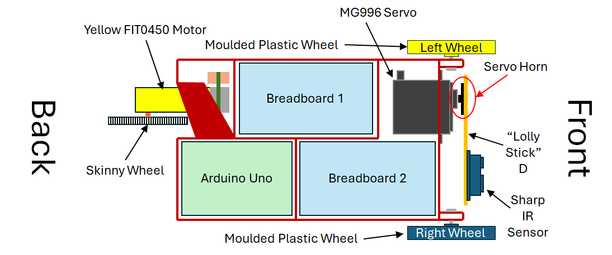
Due to overlapping parts, certain elements of the robot must be constructed in the order described below. See
- Attach the yellow FIT0450 motor to the back of the chassis
- Attach the skinny wheel to the motor
- Attach the cheap plastic wheels to the front of the chassis
- Attach the MG996 servo to the front of the chassis
- Attach the IR sensor to Lolly Stick D
- Attach the lolly stick to the servo horn
- Attach the assembled lolly stick (with the IR sensor and servo horn) to the servo shaft.
Attaching the FIT0450 and Skinny wheel
This is the most awkward component to attach to the chassis, as the motor must be maneuvered to slide into its final location and screw into place. The procedure for assembly is as follows:
- Push 2x M3x30 through the motor, from the brass shaft side.
- Carefully insert the motor into the chassis and manipulate it so that the screws are aligned with the screw holes in the chassis sidewall.
- Insert a screwdriver through the access holes in the chassis, push the screws through, and secure the motor using 2× M3 nuts, as shown in
Fig 3b and c . - Push the skinny wheel onto the motor shaft and use an M3x6 machine screw to fasten fasten it in place, as shown in
Fig 3a .

A video of this process is provided in
Note: This video has no commentary
Note: Skinny Wheels May need drilling out
The M3 mounting hole on some of the narrow wheels is too small and will need to be drilled out to 3 mm. Please see a member of the lab technical team during your lab session if this is the case.
Attaching the Moulded Plastic wheels
The moulded Plastic wheels attach to the robot chassis as shown in

Do this Before Attaching The MG996 Servo
These wheels must be attached before the servo, as the servo blocks access to the screw heads for the left wheel.
Attaching the Left-Hand Moulded Plastic Wheel
The left-hand molded plastic wheel is located next to the servo at the front of the robot, and it should be attached first. To attach this wheel, you will need an M3×20 mm bolt and an M3 Nyloc nut. The molded plastic wheels attach to the lugs at the front of the robot chassis.
The bolt for this wheel Must be inserted from between the lugs, with the bolt head in front of the rectangular servo hole. This ensures the servo mounting hole is not obstructed, allowing the servo to be installed correctly.
Note: This video has no commentary
Attaching the Right-Hand Moulded Plastic Wheel
The right-hand molded plastic wheel is located opposite the servo at the front of the robot, and it should be attached second. To attach this wheel, you will need an M3×20 mm bolt and an M3 Nyloc nut.
The presence of the left-hand wheel makes inserting the bolt from between the lugs difficult; therefore, we advise inserting the screw from the outside of the lugs, placing the nut on the inside.
Note: This video has no commentary
Note on wheel screw tightness
When securing the molded plastic wheels, ensure that you tighten the Nyloc nut sufficiently to prevent excessive wobble while still allowing the wheel to spin freely.
Attaching the MG996 Servo
Attach the moulded plastic wheels before the MG996 Servo
You must attach both plastic wheels before mounting the MG996 servo. Otherwise, the MG996 servo body will block access to the molded plastic wheel screws.
The MG996 servo is attached to the robot chassis using 4× M3×12 mm screws, as illustrated in

Note: This video has no commentary
Note: The hole for the servo has been modified since this video was filmed
For structural strength and 3D-printing yield, the servo mounting cutout on many chassis models is slightly tighter than shown in the video. With a little maneuvering, the servo will fit into the rectangular cutout.
Also note: All servo mounting hardware has been standardized to M3×12 mm screws, unlike the hardware shown in the video.
Assembling the Lolly Stick D Assembly
The lolly stick assembly consists of the Sharp IR sensor, a laser-cut plywood linkage, and a servo horn for the MG996 servo, as shown at the bottom of

Note: You can use any of the servo horns shown at the top of
We recommend assembling the lolly stick as shown in
The IR sensor is secured to the lolly stick using 2× M3×6 mm screws and 2× M3 nuts, as shown in
The servo horn is attached to the lolly stick using 2× 2×8 mm Phillips head flange screws.
Warning: Sharp Screws
The pointed ends of the flange screws will protrude through the opposite side of the servo horn. Handle this assembly carefully to avoid minor injuries from the exposed tips.
Attaching the Lolly Stick D Assembly to the Servo
The servo horn pushes onto the MG996 servo shaft and is secured in position using an M3×6 mm screw. Once attached, verify that the lolly stick can rotate smoothly between the horizontal and vertical positions, see
Info
This assembly will need to be repositioned at the start of the "Control of the Standard Servo" exercise to ensure it is calibrated correctly for the task.

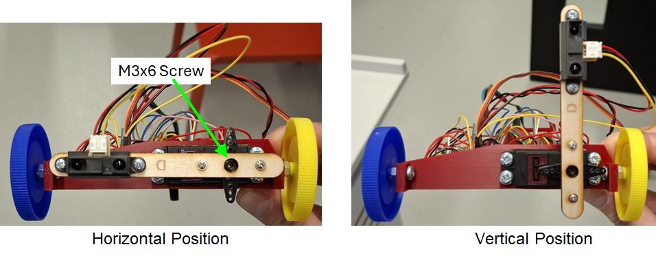
Electronic Component Layout and Connections
The layout of the electronic components on the breadboard is entirely up to you; however, the following sections illustrate how they were arranged during the design and prototyping stages of these exercises. The author recommends following this layout because it matches the example code provided for the exercises and represents a proven design.
The connections for each exercise are discussed in more detail in the
Breadboard layouts
We suggest placing the components on the two breadboards as shown in
- Breadboard 1: The LEDs, push button, and motor driver board.
- Breadboard 2: The DC power inlet socket, 10 kΩ potentiometer, and a 12-way header strip (used to connect the motor power, encoder, MG996 servo, and Sharp IR sensor).
The location of breadboard 1 and breadboard 2 in the robot chassis are illustrated in

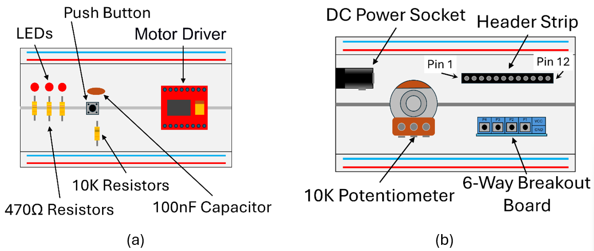
External DC Power Socket and Connection
Some of the robot systems draw too much power to be supplied directly from the Arduino via the USB connection. If you power the MG996 servo or the DC motor directly from the Arduino, you may exceed the current limits of the +5 V rail. This can cause erratic behavior, such as the Arduino intermittently restarting—a condition known as a
To overcome this issue, we will use an external DC power supply to provide additional current for power-hungry components, specifically the MG996 servo and the DC motor driver board. To facilitate this, you will add a DC power connector to your robot system, as shown in

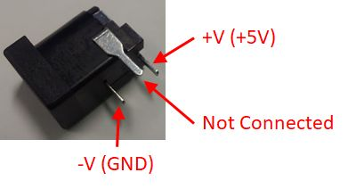
In previous years, student setups experienced issues with the DC power connector slipping out of the breadboard. To significantly reduce the chances of this happening, a cable tie can be used to strap the DC connector down to Breadboard 2, as illustrated in

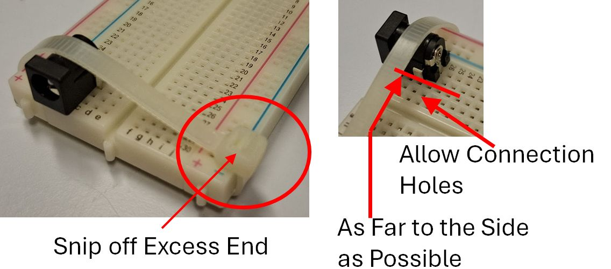
Note
Ensure that the cable tie is pulled tight around the board so that the connector cannot move before trimming the excess end.
The following section provides important details concerning the two different power supplies on the breadboards and MUST be read before continuing.
Arduino and External Power Supplies Lines
There are two +5V power supplies on the robot chassis:
- The +5V supply from the Arduino.
- The external +5V from the AC-DC Plug-in Power adaptor.
UNDER NO CIRCUMSTANCE should the +5V line from the Arduino be connected to the external 5V line. You must, however, connect all the GND (ground) lines of these power supplies - and other systems - to a common GND net/node on your robot chassis to ensure that all the working from the same reference voltage.
The external +5V should only be connected to the Vm connection of the motor drive board and the V+ power connections of any servo used on your system. The Arduino +5V should be used for the Vcc connection of the motor drive board and any other connection requiring +5V, that are not powered by the external +5V supply.
Danger: You can destroy your Laptop motherboard if you get this wrong
If you connect the +5 V supply of the Arduino and the external power supply together, you risk destroying your laptop's motherboard by sending a high voltage/current transient up the USB lead when the servo or DC motor operates.
Read the Disclaimer document before proceeding.
The University and MEE take no responsibility for damaged laptops due to this issue. We recommend using the University IT equipment to mitigate damaging your personal equipment.
At this point, you may have noticed how strongly we emphasize NOT connecting the external +5 V line to the Arduino +5 V line. This is because we want to avoid having to tell anyone that we cannot pay for repairs to their personal IT equipment... It is not a fun conversation to have!!
Suggested Circuit Layouts for the Exercises
The electronic system for the robot can be built incrementally as required for each exercise. The exercises are designed so that you only ever need to add components to the system, with later exercises building upon the work of previous ones. This means no circuitry needs to be removed between exercises.
Before starting any of the following exercises, you will need to add these additional elements to your robot circuit.
- Basic: LED Pattern
- No extra circuitry is required for the Calibration of Potentiometer Angle Exercise. This uses the potentiometer from the LED Pattern Exercise.
- Basic: IR Sensor Measurement + Graph
- Basic: Externally Powered Servo
- Basic: DC Motor
- Basic: Encoders and Motor
Note: Advanced Exercises
The advanced exercises do not require any additional circuit building. They build directly on the circuit constructed for the final Basic Exercise: Encoders and Motor.
Note on the circuit layout diagrams in the following sections
The circuit layout diagrams in the following sections were created using different drawing tools. As a result, some components and connections may not line up perfectly. Please use these diagrams alongside the accompanying figures and tables to get a clear, complete picture of how to assemble the circuit.
Circuit Layout for the LED Pattern and Calibration of Potentiometer Angle Exercises
The following circuit layout is sufficient to complete both the LED pattern exercise. This section illustrates the layout and connections for the three LEDs and their associated resistors, the push button, and the potentiometer, as shown in

The additional components required for this exercise (in addition to the Arduino and two breadboards) are shown in
- 3x LED
- 3x 470Ω resistor
- Tactile button
- 100nF capacitor
- Potentiometer
- 12-way header
| Arduino Pin: | Description: |
|---|---|
| DIO 4 | Button |
| DIO 11 | LED 1 |
| DIO 12 | LED 2 |
| DIO 13 | LED 3 |
| A5 | Potentiometer Input |
Circuit Layout for the IR Sensor Exercise
This section illustrates how to connect the Sharp IR sensor into the circuit for the IR Sensor Measurement and Graph exercise, as shown in

Extra parts required for this configuration:
- Sharp IR Sensor
- Sharp IR Sensor cable
- 6-way Screw Terminal Breakout Board
The Sharp IR sensor interfaces with the breadboard using the 6-way screw terminal breakout board shown in

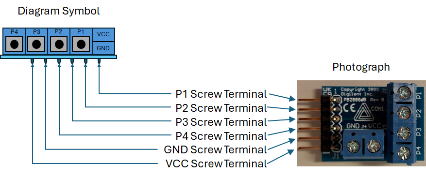
| Arduino Pin: | Description: |
|---|---|
| A4 | IR Sensor Output |
The Sharp IR sensor cable has stripped wire ends that should be connected to the 6-way screw terminal breakout board according to the pinout in
| IR Sensor Wire: | Description: | Breakout Board Terminal: |
|---|---|---|
| Yellow | IR Sensor Output | P1 |
| Red | +5V Power | VCC |
| Black | 0V Power (GND) | GND |
Circuit Layout for the Externally Powered Servo Exercise
The servo will be used in the
Warning
UNDER NO CIRCUMSTANCE should the +5V External power supply be connected to the +5V Arduino supply. You must, however, connect all the GND lines of these power supplies, and other systems, to a common GND net/node on your robot chassis to ensure that all components share the same reference voltage.

In addition to the Arduino and two breadboards, the extra components required for this exercise, shown in
- DC Servo (SG90 for the
initial servo exercise and final assessed Exercise) - DC power socket
Note
The
| Arduino Pin: | Description: |
|---|---|
| DIO 6 | Servomotor Signal Pin |
Circuit Layout for the DC Motor Exercise
The DC motor exercise requires both the TB6612FG and the DC motor to be wired into the circuit, as illustrated in

Extra parts required for this configuration:
- TB6612FG driver board
- DC motor
- DC motor power cable
Due to the orientation of the TB6612FNG board on the robot chassis, we will use Channel B for these exercises. The TB6612FNG driver board is shown in

| Arduino Pin: | Description: |
|---|---|
| DIO 5 | PWM Signal Pin |
| DIO 7 | BI1 Signal Pin |
| DIO 8 | BI2 Signal Pin |
Note
All GND pins are connected internally on the TB6612FNG breakout board; therefore, only a single GND connection to the power system is required.
The DC motor power terminals are connected through the
Circuit Layout for the Encoders and Motor Exercise
The final part of the circuit to connect is the motor encoder to the Arduino, as illustrated in

Extra parts required for this configuration:
- DC motor encoder cable
| Arduino Pin: | Description: |
|---|---|
| DIO 2 | Encoder B Signal |
| DIO 3 | Encoder A Signal |
The 12-Way Header Connections
The 12-way header connector provides a convenient method for interfacing key system components—the motor, encoder, servo, and IR sensor—to the breadboard for easy integration with the rest of the electrical system. A summary of the connections used during development is provided in
Note
During the writing of this document, a 6-way screw terminal header was added to the assembly to replace some of the 12-way header connections. As a result, several of the 12-way header connections listed in
Introductory and Supplementary Material
Introduction
This section provides a getting started guide to the Arduino IDE and a self-paced tutorial structure for students who are new to C or Arduino programming. It contains two documents:
Supplementary Signposting Document to Accompany the introductory Exercises document: A reference guide for students seeking additional support with C or Arduino programming. This document provides direct links to external learning resources and relevant sections of theArduino Language Reference mapped directly to concepts covered in the introductory exercises.- The "Getting Started"
Introductory Exercises A formative, non-assessed "Getting Started" guide for students with little or no prior Arduino experience. It guides you through installing and configuring the Arduino IDE and introduces basic digital and analog I/O programming.
Providing comprehensive C programming instruction is beyond the scope of this module and the allocated teaching contact hours. Since numerous high-quality online learning resources already exist, the
Supplementary Signposting Document to Accompany The Introductory Exercises
Pre-face
This document is designed for students with little or no C programming experience, though it serves as a useful signposted reference for all students. Beginners can use this guide alongside the
Students with existing C programming experience may skip this document and proceed directly to the Introductory Exercises, or advance straight to the first assessed exercise:
Introduction
In previous years, it has become evident that some students enrolled in the Mechatronics module have no prior experience programming in C/C++ or working with Arduino and microcontroller-based embedded systems. Consequently, these students often struggle with the fundamentals of the laboratory exercises due to a lack of introductory C programming skills.
Providing comprehensive C programming instruction is beyond the scope of this module and the allocated teaching contact hours. Since numerous high-quality online learning resources already exist, this document provides signposts to key resources covering essential C programming concepts required for the laboratory activities.
Note
This document does not provide an exhaustive list of all programming topics required for the module. You may need to explore additional resources independently to further develop your programming knowledge and skills.
This guide highlights curated tutorial resources from
You are expected to self-guide your learning to build the required skills for the laboratory exercises and coursework project. If you discover additional high-quality programming resources that would benefit future cohorts, please share them with the teaching team so they can be integrated into future course updates.
The remaining subsections outline key topics and resources to support you throughout the laboratory activities and project.
External tutorial websites linked from this document
The tutorials on
Each
Another valuable resource is
Note
The following sections curate specific lessons from
Arduino Language Reference
The
Note
Relevant entries from the
Arduino Build-in Examples within the Arduino IDE
The
Many of the guides in the built-in examples and tutorials sections will serve as helpful technical references when designing your coursework project.
Introduction to Programming an Arduino in C.
The remainder of this document provides a structured set of signposted links to help you build a solid understanding of C programming fundamentals. It interweaves tutorials from
The Arduino API consists of a series of C/C++ functions and libraries that you can invoke within your code. While the native language underlying the Arduino framework is C++, this module focuses exclusively on procedural C programming.
For interested students, a brief overview and history of the C programming language is available on
Hello World Example
A standard entry point when learning any programming language is the "Hello World" program (see the "Hello World" to the Serial Monitor output.
The Standard Output in Arduino
Unlike full desktop operating systems, microcontrollers do not have a built-in terminal display or standard console output. In Arduino development, standard output text streams are directed over USB to the
Basic Syntax Elements
The following fundamental syntax elements are required for valid C/Arduino code execution:
Semicolon (;) : Terminates individual statements and instruction lines.Curly braces ({ }) : Defines statement blocks, function bodies, and control flow scopes.
Code Comments
Comments provide human-readable explanations within your source code. You should write clear, concise comments to explain complex implementation details and design choices. Comments are essential for debugging and collaborating, and they must be kept up to date whenever code is modified.
Single Line Comment (//) : Ignores all text from the//sequence to the end of the line.Block Comment (/ ... /) : Ignores all text enclosed across single or multiple lines.
Preprocessor Directives
Preprocessor directives configure your program before compilation:
-
#define (Macro Definition) : Replaces literal values or code snippets across your sketch before compilation. Defining global constants with#defineimproves readability and simplifies maintenance. However, complex logic macros should generally be replaced by inline functions or typedconstvariables. -
#include (Include Library) : Links external software libraries or header files into your sketch (for instance, including<Servo.h>to control servo motors).
Variables and Numbers
A critical aspect of embedded systems programming is selecting appropriate variable data types to manage limited SRAM memory efficiently. The byte(), int(), and float()), refer to the
For additional background on declaration syntax and variable scope, see the
Arrays and Data Structures
An array is a indexed collection of variables of the same data type stored sequentially in memory.
-
Single-Dimensional Arrays: Learn how to declare, initialize, and access zero-indexed data elements using the
Learn-C Arrays Tutorial . -
Multidimensional Arrays: Used to store grid-based or tabular data structures using multiple indices (e.g., rows and columns in a 2D matrix). Review the
Learn-C Multidimensional Arrays Tutorial .
For an in-depth reference on array manipulation, pointer-array relationships, and memory allocation in C, consult
Functions
Functions are self-contained blocks of code designed to perform specific tasks. They modularize code, improve readability, and eliminate code duplication by allowing repeated execution from multiple call sites. When writing Arduino sketches, you will utilize both built-in API functions (such as pinMode() and digitalWrite()) and custom functions created for your own application logic.
For introductory walkthroughs on function prototypes, parameters, and return types, see thethe
Introductory Exercise 1: Blink Example
The "Blink" sketch serves as the initial test exercise in the
Files \(\rightarrow\) Examples \(\rightarrow\) 01.Basics \(\rightarrow\) Blink
Refer to the official
Resistor Value Difference
While the standard Arduino online tutorial specifies a \(220\,\Omega\) current-limiting resistor, Exercise 1 instructs you to use a \(470\,\Omega\) resistor to protect the lab kit LEDs.
The Blink example validates that your software environment, compiler, and USB communications interface are functioning correctly. An Arduino sketch is structured into three primary regions:
- Global Scope: Located at the top of the sketch, this area is used for defining global variables, importing libraries via
#include, and creating preprocessor macros using#define. setup() function: Executes once when the board powers on or resets. It is used to initialize GPIO pin modes (pinMode()), set up hardware peripherals, and configure communication baud rates.loop() function: - Executes repeatedly aftersetup()completes. This function contains your main control algorithm, continuously sampling inputs and updating outputs.
Program Execution and Timing Delays
The Blink sketch utilizes the
To implement precise iterative or conditional timing in your code, review the following iteration structures:
- while loops: Iterates a block of code continuously as long as a specified conditional condition remains true.
- For Loops: Iterates a block of code a predetermined number of times using an internal counter variable.
For detailed syntax examples, consult the Learn-C
Decision Making and Control Flow
A core requirement of embedded control systems is making operational decisions based on sensor inputs, system states, and logical conditions. The if statement in C.
For Arduino-specific syntax and conditional logic, consult the official documentation for the
Switch-Case Control Structures
The switch...case statement provides an efficient alternative to lengthy if...else if chains when branching execution based on specific discrete integer values of a control variable:
- Arduino Reference:
Switch/Case Syntax Guide . - C-Programming.com Guide:
Switch/Case Statements in C .
Finite State Machines (FSM)
switch...case structures are widely used to implement Finite State Machines (FSM). A
Serial Monitor and Communications
As noted previously, Arduino microcontrollers lack a traditional desktop console display for standard output. Instead, serial communication is used to transmit debug text, system messages, and real-time variable values between the microcontroller and a connected host computer. The built-in Serial Monitor in the Arduino IDE serves as an integrated terminal for viewing these text streams.
For a practical guide to configuring and using the Serial Monitor, see the
Serial API Functions
Transmitting data to the Serial Monitor requires initializing and calling functions from the hardware
-
Serial.begin(baudRate) : Initializes serial communication and sets the data transmission rate in bits per second (e.g.,Serial.begin(9600);). This must be called insidesetup(). -
Serial.print(val) : Prints data to the serial port as human-readable ASCII text. -
Serial.println(val): Prints data to the serial port followed by a carriage return and newline character (\r\n).
The string data type
Before outputting text data to the Serial Monitor, it is essential to understand how text strings are represented and stored in memory. Review the
In embedded C and Arduino development, text can be represented using two distinct approaches:
-
C-Style Character Arrays (char[ ]): Null-terminated arrays of characters. This is the memory-efficient standard for resource-constrained microcontrollers. -
Arduino String Object (String): A dynamic object wrapper that provides convenient helper methods for string manipulation. Note: Frequent dynamic allocation ofStringobjects can fragment limited SRAM; C-style character arrays are preferred for complex sketches.
, and being aware of the
Introductory Exercise 2: Push Button and LED
The
The code provided in the laboratory worksheet demonstrates digital input sampling (digitalRead()) and illustrates how to use the Serial Monitor for real-time state logging and variable debugging.
Final Comment
The signposted background C programming resources provided in this guide cover the essential syntax and concepts required to complete the laboratory exercises in this module.
You are encouraged to explore additional online or print resources to strengthen your C programming skills independently. If you find high-quality tutorials or documentation that would enrich this signposting guide, please notify the teaching staff so we can consider integrating them into future course revisions.
Getting Started - Introductory Exercises (Non-assessed)
The Arduino IDE
This guide provides a brief overview of installing and configuring the Arduino Integrated Development Environment (IDE) for your laboratory activities. Two introductory exercises accompany this section to guide you through compiling and uploading code to the Arduino microcontroller, as well as working with basic digital inputs and outputs.
The Installing and Using the Arduino IDE on a University Managed PC
The Arduino IDE is pre-installed on workstations across the Electronics and Control Laboratory. If you are using a managed PC in another area of The Diamond or across the wider university campus, you can install the software directly via the Software Centre application.
Administrative Restrictions
Students do not have administrator rights on university-managed desktop PCs and cannot download or run executable installers directly from the web. Always use Software Centre for software installation on campus hardware.
Installation and Setup of the Arduino Software on your own
Scope Notice
The installation steps below apply only to setting up personal home computers or laptops. All university laboratory PCs already have the required software pre-configured.
Please note that all module documentation, drivers, and laboratory instructions are written for Windows 10 and 11 (64-bit). The course team cannot provide technical support for other operating systems.
For official installation instructions, board package setup guides, and software downloads, visit the official
Procedure:
- Download and Install Arduino IDE: Download the Windows installer package from the official debugHL>hhttps://www.arduino.cc/en/software/ and complete the setup wizard.
- Verify IDE Installation: Launch the Arduino IDE to verify that the application opens cleanly without initialization errors.
- Ensure the correct board core package is installed to support the ATmega328P microcontroller:
- Open the Boards Manager via Tools \(\rightarrow\) Board \(\rightarrow\) Boards Manager... (or click the Board Manager icon in the left-hand sidebar).
- Search for Arduino AVR Boards.
- Verify that the package is installed. If an update is available, select the latest version from the drop-down menu and click Update.
-
Connect Hardware and Select Target Port: Connect your Arduino Uno board to your computer via USB (using an inline USB isolator on personal laptops) and configure the target device settings:
- Go to Tools \(\rightarrow\) Board \(\rightarrow\) Arduino AVR Boards and select Arduino Uno.
- Go to Tools \(\rightarrow\) Port and select the active communication port corresponding to your connected board (e.g., COM3 or COM4 on Windows).
For detailed board selection and driver troubleshooting, refer to the official Getting Started with
Arduino Uno Guide .
Laboratory Exercises
Simple Digital I/O
Note
The following exercises provide an introductory, step-by-step tutorial on compiling and uploading basic code via the Arduino IDE. They are specifically designed for students with no prior microcontroller experience.
Microcontrollers serve as the core embedded controller in many mechatronic and robotic systems. In these introductory exercises, you will interface basic digital input components (such as tactile push buttons) and digital output components (such as Light Emitting Diodes).
These digital components demonstrate fundamental sensor-actuator control loops: an user-initiated input event (e.g., depressing a push button) triggers software execution that modifies system output state (e.g., toggling an LED indicator).
Note
Before starting the laboratory exercises, review the documentation inside the Mechatronics Kit Information directory under the Lab Practicals (Sem 1) area on the Blackboard site.
Intro Exercise 1: Blink Example
The aim of this exercise is to demonstrate how to compile, upload, and run a simple program on the Arduino Uno hardware..
Executing the built-in "Blink" sketch verifies that your software environment and toolchain are configured correctly while confirming hardware functionality and USB communication.
Procedure:
- In the Arduino IDE, navigate to File \(\rightarrow\) Examples \(\rightarrow\) 01.Basics \(\rightarrow\) Blink as shown in
Fig. 1 :

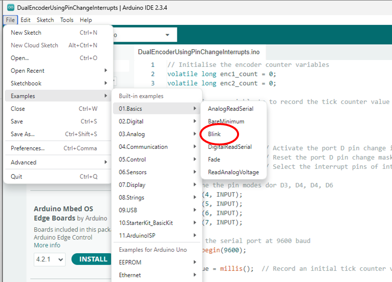
Built-in Examples
The built-in examples provided within the Arduino IDE offer a valuable repository of reference implementations demonstrating hardware control, peripheral interfacing, and C programming constructs.
- To compile and upload the sketch to your connected Arduino board, click the Upload button (the right-pointing arrow icon) located on the top toolbar, as shown in
Fig. 2 :

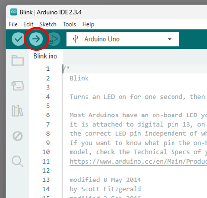
After the Arduino IDE finishes compiling and uploading the sketch, the microcontroller automatically executes the program. For the Blink sketch, successful execution is indicated by the onboard status LED, labeled "L" (highlighted in red in

- The setup() and loop() functions for the Blink sketch are shown below:
// the setup function runs once when you press reset or power the board
void setup() {
// initialize digital pin LED_BUILTIN as an output.
pinMode(LED_BUILTIN, OUTPUT);
}
// the loop function runs over and over again forever
void loop() {
digitalWrite(LED_BUILTIN, HIGH); // turn the LED on (HIGH is the voltage level)
delay(1000); // wait for a second
digitalWrite(LED_BUILTIN, LOW); // turn the LED off by making the voltage LOW
delay(1000); // wait for a second
}
Modify the integer arguments inside the delay() calls (e.g., change 1000 to 200 or 2000), compile, and upload the updated sketch to your board. Observe the state changes on the onboard LED "L".
(For detailed function syntax, input parameters, and execution limitations of the delay() function, consult the official
Intro Exercise 2: Push Button and LED
The aim of this exercise is to interface a digital input device (a tactile push button switch) to control a digital output actuator (a Light Emitting Diode).
Wiring Procedure:
- Using the components provided in your Mechatronics lab kit, assemble the circuit shown in
Fig. 4 on your breadboard according to the following specifications:- Digital Input (Push Button): Connect one side of the push button switch to digital pin 2 on the Arduino Uno. Connect a \(10\,\text{k}\Omega\) pull-down resistor between digital pin 2 and the GND rail to ensure a stable low state when the button is unpressed.
- Digital Output (LED): Connect digital pin 13 on the Arduino Uno to the anode (longer leg) of the LED through a \(470\,\Omega\) current-limiting resistor. Connect the cathode (shorter leg) of the LED directly to the GND rail. (Note: Digital pin 13 is shared with the onboard status LED "L").
- Power Connections: Connect the 5V and GND header pins from the Arduino Uno to the power distribution rails of your breadboard.
Wire Color Coding
While wire insulation color does not affect electrical functionality, adhering to standard color conventions (e.g., Red for 5V, Black for GND) improves circuit readability and simplifies troubleshooting during lab practicals.
Pull-Down Resistor Operation
Digital pin 2 is tied to the \(0\,\text{V}\) (GND) supply rail through a \(10\,\text{k}\Omega\) pull-down resistor.
When the button is pressed, pin 2 is connected directly to the \(+5\,\text{V}\) rail, driving the input state HIGH. When the button is released, the \(10\,\text{k}\Omega\) resistor drains remaining charge and pulls the input voltage back down to \(0\,\text{V}\) (LOW). Without this pull-down resistor, the input pin would "float" in a high-impedance state, picking up electromagnetic noise and causing unpredictable or spurious input readings.

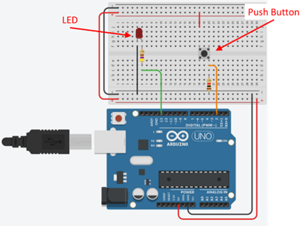
To open the sketch for this exercise within the Arduino IDE, navigate to:File \(\rightarrow\) Examples \(\rightarrow\) 02.Digital \(\rightarrow\) Button
Procedure:
- Compile and Upload: Click the Upload button to compile and upload the Button sketch to your Arduino board.
- Verify Circuit Operation: Press and hold the push button. The external LED (and onboard LED "L") should illuminate immediately. Release the push button; the LED should extinguish.
Serial Data Logging and Debugging
In embedded system development, monitoring runtime variable values and diagnostic messages is essential for verifying software execution. Using the built-in Serial library, the Arduino streams ASCII text data over its hardware UART line and USB connection (utilizing the same Virtual COM port used to flash firmware). You can observe this real-time data stream directly using the Serial Monitor terminal in the Arduino IDE.
The modified Button example code,
// constants won't change. They're used here to set pin numbers:
const int buttonPin = 2; // the number of the push button pin
const int ledPin = 13; // the number of the LED pin
// variables will change:
int buttonState = 0; // variable for reading the push button status
void setup() {
// Initialise communications with the serial monitor. Parameter: baud rate
Serial.begin(9600);
// initialize the LED pin as an output:
pinMode(ledPin, OUTPUT);
// initialize the push button pin as an input:
pinMode(buttonPin, INPUT);
}
void loop() {
// read the state of the push button value:
buttonState = digitalRead(buttonPin);
// Write the value of the buttonState variable to the serial monitor
Serial.println(buttonState);
// check if the push button is pressed. If it is, the buttonState is HIGH:
if (buttonState == HIGH) {
// turn LED on:
digitalWrite(ledPin, HIGH);
} else {
// turn LED off:
digitalWrite(ledPin, LOW);
}
}
These additional commands perform the following operations:
-
Serial.begin(9600);: Configures the microcontroller's hardware serial peripheral and sets the communication speed to 9600 baud (bits per second). This must be called inside the setup() function. -
Serial.println(buttonState);: Formats the integer value of buttonState as text and transmits it across the COM port, terminating the line with a carriage return and line feed (\r\n).
For complete syntax documentation and related peripheral drivers, see the Arduino Serial Reference Guide
Launching the Serial Monitor
To open the Serial Monitor console within the Arduino IDE, click the Serial Monitor icon (magnifying glass icon in IDE 1.x or the terminal icon in IDE 2.x) located in the upper-right corner of the window, as shown in Figure 5.
Links to all the Serial function descriptions are listed towards the bottom of the
To open the Serial Monitor, from the Arduino IDE, click the button in the top right of the IDE, as highlighted in

Procedure:
- Update and Upload the Sketch: Add
Serial.begin(9600);tosetup()andSerial.println(buttonState);toloop(), then click Upload to program the Arduino Uno. - Launch the Serial Monitor: Click the Serial Monitor button in the top-right corner of the Arduino IDE interface (or press Ctrl + Shift + M). Ensure the baud rate drop-down menu in the bottom-right of the terminal is set to 9600 baud.
- Observe Output Stream: Observe the output console while interacting with the hardware:
- Button Released: The Serial Monitor prints continuous streams of 0.
- Button Pressed: The output state transitions instantly to 1.
Basic Exercises
Basic Exercises
The laboratory practicals are structured into two distinct tiers:
- Basic Exercises: Focus on fundamental interfacing techniques, sensor signal acquisition, and low-level actuator control.
Advanced Exercises : These are more concerned with integrating the elements of the Basic Exercises into a working system, to achieve a goal. During the Advanced exercises you will also work with slightly more advanced programming concepts, such as implementation of a PI Controller and simplefinite state machines , (we will provide programming templates for both of these topics).
Focus on system-level integration, combining individual hardware drivers to achieve complex closed-loop functionality. These tasks introduce higher-level embedded control strategies, including Proportional-Integral (PI) control loops and
Basic Exercises List
As outlined in the
- Basic:
LED Pattern - Basic:
IR Sensor Measurement + Graph - Basic:
Externally Powered Servo - Basic:
DC Motor - Basic:
Encoders + Motor
Prerequisite Progression Rule
You must complete and obtain assessment sign-off for all five Basic Exercises before you can receive credit for any
Refer to the
Assessment & Demonstrations
Each exercise is evaluated during timetabled laboratory sessions by Graduate Teaching Assistants (GTAs) using the marking criteria at the end of each exercise. When you have completed and verified an exercise circuit and sketch, notify a GTA to demonstrate your working system.
Each of these exercises will be assessed during the laboratory session, using the assessment structure outlined in the Appendix section of this document. When you have completed an assessed exercise, you should get your work marked one of the GTAs.
Marking Deadline & Queue Management
Do NOT delay marking until the final laboratory session. GTAs cannot guarantee sign-offs if a backlog occurs near the end of the final session, and unverified exercises will result in lost marks. Request marking immediately upon completing each individual exercise.
LED Pattern Exercise
Introduction
In this exercise, you will implement a repeating light sequence across three LEDs, use a potentiometer analog input to dynamically adjust the flash rate, and use a push button digital input to pause and resume sequence execution.
GTA Assessment Sign-Off
This is an assessed laboratory exercise. Upon completing Part 3, verify that your implementation satisfies all Assessment Criteria before demonstrating your working system to a Graduate Teaching Assistant (GTA) for marking.
Hardware Prerequisites & Pin Mapping
Before beginning this exercise, verify that the three LEDs, push button switch, and potentiometer are mounted to the breadboard on your robot chassis, as described in
The following video is a quick demonstration of the final outcome from this exercise:
Part 1: LED Sequence
In this part, you will write a program to generate a repeating output sequence across the three LEDs with a fixed time step (e.g., \(500\,\text{ms}\)).
| Sequence Index: | LED 3 (DIO 13) | LED 2 (DIO 12): | LED 1 (DIO 11): |
|---|---|---|---|
| 0 | 0 | 0 | 0 |
| 1 | 0 | 0 | 1 |
| 2 | 0 | 1 | 0 |
| 3 | 0 | 1 | 1 |
| 4 | 1 | 0 | 0 |
| 5 | 1 | 0 | 1 |
| 6 | 1 | 1 | 0 |
| 7 | 1 | 1 | 1 |
No starter template code is provided for this task; you must author your sketch from scratch. You may reference code structure patterns from the
Procedure:
- Verify Hardware Connections: Verify your LED circuit connections against the recommended chassis breadboard layout:
- Connect the anode (longer lead) of each LED to Arduino digital pins 11, 12, and 13, respectively.
- Connect the cathode (shorter lead) of each LED to the GND rail through an individual \(470\,\Omega\) current-limiting resistor.
- Develop the Base Sequence Sketch: Write a sketch to cycle through an LED pattern at a fixed time step (e.g., \(500\,\text{ms}\)).
- You may implement the 4-step sequence from
Table 1 or design a custom sequence. - If implementing a custom sequence, it must consist of at least 8 distinct patterns (minor pattern repetitions are permitted, but the sequence must not be purely repetitive).
- You may implement the 4-step sequence from
- Implement Timing Controls: Use the
delay()function to control sequence step durations.- Implementation Rationale: Hardcoding time delays using delay() at this stage allows you to seamlessly substitute the static delay duration argument with dynamic values read from the Analog-to-Digital Converter (ADC) in Part 2.
- Save and Verify Sketch: Compile, upload, and test your program. Save your completed sketch (Part1_LED_Sequence.ino) before proceeding to Part 2.
Standardized Layout Recommendation
We strongly advise following the chassis breadboard layout and pin assignments specified in the
Part 2: Potentiometer Control of the Sequence Rate
Info
As specified in the
This part of the exercise is divided into two distinct sections:
This part of the exercise is split into two sub sections:
- Section 1: Execute the
POT.ino test program to sample the potentiometer's analog voltage and display the converted digital values on the Serial Monitor. - Section 2: Integrate analog reading logic into your LED sequencing sketch to dynamically control the pattern flash rate using the potentiometer.
Section 1: The Read the Potentiometer Test Program, POT.ino
The aim of the
ADC Resolution & Voltage Mapping
The ATmega328P microcontroller's ADC features a 10-bit resolution (\(2^{10} = 1024\) discrete quantisation levels). Operating across a \(0\,\text{V}\) to \(+5\,\text{V}\) reference range, input voltages are mapped directly to integer values from 0 (\(0\,\text{V}\)) to 1023 (\(+5\,\text{V}\)), yielding an analog resolution of approximately \(4.88\,\text{mV}\) per ADC step (\(5\,\text{V} / 1024\)).
Procedure:
- Setup Sketch Environment: Create a new, blank sketch in the Arduino IDE, paste the
POT.ino source code into the editor, and save it to your working directory as POT.ino. - Verify Breadboard Wiring: Verify your circuit wiring against the pin allocations specified in the
Building the Robot Document :- Potentiometer Outer Pin 1: Connect to the GND rail (\(0\,\text{V}\)).
- Potentiometer Outer Pin 2: Connect to the +5V power rail.
- Potentiometer Center Wiper Pin: Connect to analog input pin A5.
- Output LEDs: Status LED: Ensure the external indicator LED is connected to PWM digital pin 11 through a \(470\,\Omega\) resistor.
-
- Upload and Open Serial Monitor: Compile and upload POT.ino to the Arduino Uno. Open the Serial Monitor console (Ctrl + Shift + M) and confirm that the baud rate is set to 9600 baud.
- Test Analog Response: Observe live telemetry streaming to the terminal and hardware response while adjusting the control knob:
- Rotate the potentiometer wiper across its full angular travel and verify that ADC output spans the full 10-bit dynamic range (0 to 1023).
- Observe the status LED brightness scale proportionally with potentiometer position.
- Save Sketch Progress: Save your verified sketch before moving on to Section 2.
The map() Scaling Function
The 'POT.ino' sketch uses the Arduino 'map()' function to perform linear interpolation, scaling 10-bit ADC raw values (0–1023) down to an 8-bit range (0–255) required for the hardware PWM timer register ('analogWrite()'):
This example program uses the map() function to ‘map’ the ADC measurement values between 0 and 1023, to a range of 0 to 255. This new range is required to write the PWM signal to change the LED brightness – PWM will be covered in the next lab session, so for this example, just assume this is an analogue output from the Arduino.
For full syntax and implementation details, consult the official:
Section 2: Dynamically Adjusting Sequence Delay
In this section, you will integrate the potentiometer sampling logic from Section 1 into your LED pattern sketch from Part 1. The sampled ADC value will be passed dynamically to the delay() function to adjust sequence timing in real time.
Procedure:
- Incorporate ADC Sampling Logic: Open your completed sketch from
Part 1 Declare an integer variable (e.g., sensorVal) and use analogRead(); inside loop() to sample the potentiometer state during each step of the sequence. - Bind ADC Values to Sequence Delay: Pass the variable containing the sampled ADC value directly into the
delay()function calls controlling pattern step intervals. - Test Dynamic Speed Scaling: Compile, upload, and test your code on the Arduino Uno:
- Rotating the potentiometer one-way should increase input voltage toward \(+5\,\text{V}\) (increasing ADC count), extending delay time and slowing down sequence rate.
- Rotating the potentiometer the other way should drop input voltage toward \(0\,\text{V}\) (decreasing ADC count), reducing delay time and speeding up sequence rate.
- Verify smooth, continuous speed adjustment across the full travel range.
- Save Completed Sketch: Save your finalized sketch (Part2_Variable_LED_Sequence.ino) before moving to Part 3.
Optional Speed Mapping
By default, passing raw 10-bit ADC values (0 to 1023) directly into delay() results in timing delays ranging from \(0\,\text{ms}\) (instantaneous state transitions) to \(1023\,\text{ms}\) (~\(1\,\text{s}\)). If you wish to constrain or invert speed ranges (e.g., \(100\,\text{ms}\) to \(2000\,\text{ms}\)), use the map() function to re-scale the raw ADC value prior to calling delay().
Part 3: Pause Control via Push Button Input
In this final section of Basic Exercise 1, you will integrate digital input sampling for the breadboard push button switch. The button state will act as a blocking control signal to pause pattern progression while pressed and resume pattern execution upon release.
Procedure:
- Initialize Push Button Input: Open your completed sketch from
Part 2 and cofigure the button on digital input 4 - Implement Pause Condition Logic: Incorporate code to inspect the button state during sequence transitions. Hold code execution inside a conditional evaluation loop (such as a while statement) for as long as the button reads HIGH.
- Test Integrated System Operation: Compile, upload, and verify full system operation on your Arduino Uno:
- Sequence Execution: LEDs cycle through the pattern sequence continuously.
- Speed Control: Rotating the potentiometer dynamically scales pattern step timing.
- Pause Functionality: Pressing and holding the push button freezes the current LED state instantly. Releasing the button resumes sequence execution from where it paused.
- Prepare for Marking Sign-Off: Save your finalized sketch (Part3_Integrated_LED_Pattern.ino). Verify your system satisfies all criteria in the
Exercise Assessment before calling a GTA to demonstrate your working circuit and code.
Exercise Assessment
What do we expect to see from the demonstration?
- The three LEDs should be flashing in a continuously repeating sequence of at least 8 different patterns.
- When you rotate the potentiometer to the right, the sequence should speed up, and when you rotate the potentiometer to the left, the sequence should slow down. There should be a continuous variation in sequence speed proportional to the position of the potentiometer between the left and right extremes.
- When the button is pressed, the sequence should pause, but not reset.
Now Get Your Work Marked by a GTA
Once you have completed your code and are satisfied with its operation, you should show your work to a GTA for marking.
Appendix: POT.INO Code
// Global Name Space
int potAnalogPin = 5; // FSR is connected to analog 0
int LEDpin = 11; // connect Red LED to pin 11 (PWM pin)
int potReading; // the analog reading from the FSR resistor divider
int LEDbrightness;
void setup(void) {
// We'll send debugging information via the serial monitor
Serial.begin(9600);
pinMode(LEDpin, OUTPUT);
}
void loop(void) {
potReading = analogRead(potAnalogPin);
Serial.print("Analog reading = ");
Serial.println(potReading);
// we'll need to change the range from the analog reading (0-1023) down to
//the range used by analogWrite (0-255) with map!
LEDbrightness = map(potReading*1, 0, 1023, 0, 255);
// LED gets brighter the harder you press
analogWrite(LEDpin, LEDbrightness); // here you are using PWM !!!
delay(10);
}
Measure the Output of the Sharp IR Distance Sensor Exercise
GTA Marking
This is an assessed laboratory exercise. Upon completing all practical tasks, verify that your work satisfies the
Note
Before beginning software implementation, verify that the Sharp IR distance sensor is securely mounted to the robot chassis, as shown in
The following video provides a quick demonstration of the expected outcomes for this exercise:
Introduction and Background
The aim of this exercise is to experimentally characterise the Sharp IR sensor and draw a graph of the measured output against measurement distance. During this exercise, you will interface the Sharp IR distance sensor with the Arduino's ADC, record the measured output voltage as a function of the distance to a target, and evaluate operational limitations—specifically the minimum detection threshold and dynamic range.
!!!! note "Hardware Assembly Checklist"
Before proceeding with this exercise, you must ensure that the circuit is constructed in accordance with
Noise on the IR sensor
The IR sensor is not an ideal sensor. As can be seen from

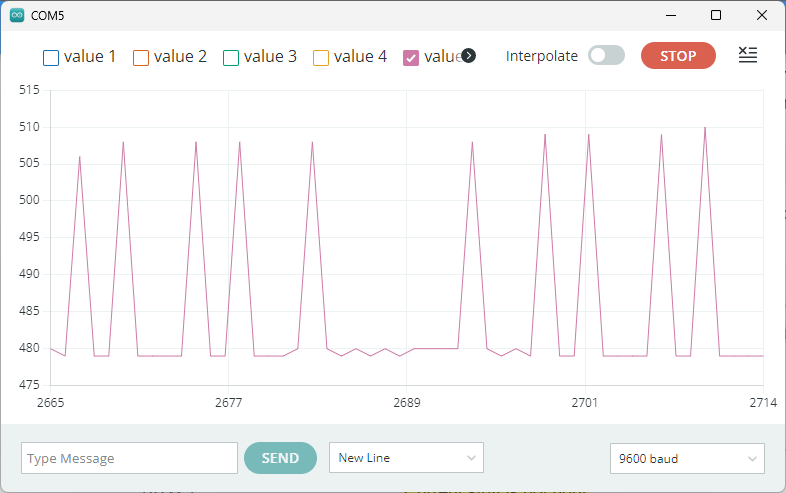
A
//Read the IR sensor
irVal = analogRead(irPin);
// accumulate a further 7 readings
irVal = irVal + analogRead(irPin);
irVal = irVal + analogRead(irPin);
irVal = irVal + analogRead(irPin);
irVal = irVal + analogRead(irPin);
irVal = irVal + analogRead(irPin);
irVal = irVal + analogRead(irPin);
irVal = irVal + analogRead(irPin);
// right shift 3 places to divide by 8
irVal = irVal >> 3;

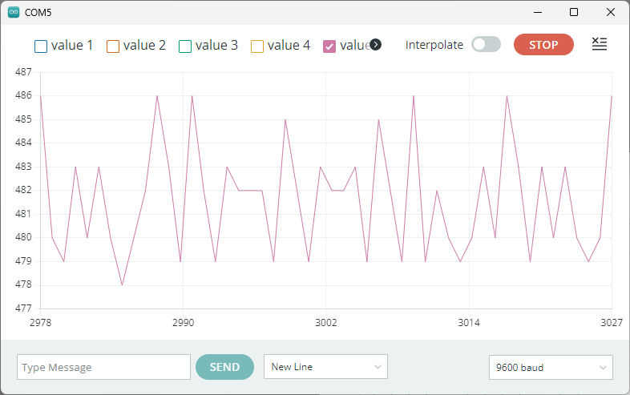
Comparing the noise magnitude superimposed on the raw IR sensor measurement in
Experimental Setup with Lolly Stick up
The IR sensor is sensitive to picking up reflections from any surface that it is operating. It has been found from experimentation, that raising the sensor above the surface (operating plane) produces improved and more consistant results.
As a result, when using the IR sensor, you should ensure that the lolly stick assembly is in the upright position, as shown in the righthand figure in the
Component Data Sheets and Technical Documentation
For more details on concerning the pin connections for the Sharp GP2Y0A21YK0F distance measurement sensor, see the data sheet for the sensor on the Blackboard site:
ACS231 Blackboards Site>>Mechatronics Kit Information>> Component Data Sheets and Technical Documentation.
Expected Results
The IR sensor has a non-linear distance to output voltage characteristic, as illustrated in

Assessed Exercise
For this assessed exercise you will develop an Arduino sketch to sample the output of the IR sensor and display the ADC value of on the serial monitor. The distance measurements should be taken at STATIC positions, using a series of measurement points at:
1cm, 2cm, 3cm, 4cm, 5cm, 6cm, 7cm, 8cm, 9cm, 10cm, 15cm, 20cm, 25cm, 30cm, 35cm, 40cm, 45cm, 50cm, 55cm, 60cm, 65cm, 70cm, 75cm, and 80cm
You will collect static calibration data and generate a plot using a software analysis tool (such as Microsoft Excel, MATLAB, or Python/Matplotlib). The resulting plot must display Target Distance (\(\text{cm}\)) on the horizontal (\(x\)) axis and ADC Reading on the vertical (\(y\)) axis.
Procedure:
- Develop the Acquisition Sketch: Using the POT.ino sketch as a template, write an Arduino sketch to sample the output of the IR distance sensor, incorporating the 8-sample moving avarage filter, and stream the results to the serial monitor.
- Prepare Measurement Fixture: Position the robot chassis level surface. Align a ruler or tape measure along the sensor's optical axis. Ensure no adjacent obstacles infringe on the sensor's field of view.
- Record the Sensor Output at Different Distances: For all of the distance measurements, listed above, record and tabulate the ADC measurement values.
- Plot Sensor Transfer Function: From this dataset, plot the results for Target Distance (\(\text{cm}\)) on the horizontal (\(x\)) axis and ADC Reading on the vertical (\(y\)) axis.
- Demonstrate and Obtain Sign-Off: Present your resulting graph to a GTA for assessment and demonstrate the operation of your working system.
Exercise Assessment
What we expect to see from your demonstration?
When completed, your code should allow you to run an experiment to draw the following graph:
- A graph of ADC measurement value against distance.
- The graph should be correctly framed within the axes.
- Appropriate axes labels, with units and a descriptive graph title.
You should plot your results in a computer package, such as Microsoft Excel, MATLAB, or Python/Matplotlib, with the x-axis as the distance measured, and the y-axis as the ADC measurement value, as illustrated in
Fig 3
We expect you to also demonstrate the operation of your code and the output on the Serial Monitor, as describes in the procedure.
Now Get Your Work Marked by a GTA
Once you have completed your code and are satisfied with its operation, you should show your work to a GTA for marking.
Drive the Servo Motor Exercise
GTA Marking
This is an assessed Exercise. When you have completed the Assessed Exercise, you should show your work to a GTA to get marked.
Note
Before starting the software development for this exercise, you should ensure that you have completed the circuit on the robot chassis, as suggested on
The following video is a quick demonstration of the final outcome from this exercise:
Introduction
The aim of this exercise is to demonstrate the control of a position-control servo—specifically the MG90 servomotor. The MG90 is a low-power servo motor that can be driven directly from the Arduino board power supply.
Exercises:
Controlling a Standard Servomotor directly from the Arduino. (Informal Exercise)
Transitioning to MG90 Servo Motors
We are transitioning away from SG90 servos due to robustness issues and replacing these with MG90 servos. Some of you may still find that you have an SG90 servo in your kit – this is OK, you can use this device with same wiring, fixtures, and code.
The MG90 is a low-power servo motor and can be driven directly from the Arduino board power supply without requiring an external supply. However, if you attempt this with the MG996 servo, the current draw may be too large, causing voltage drops on the power supply lines that trigger an Arduino "
Note on the following Informal Exercise
This exercise is a legacy task from a previous iteration of the course and requires an standalone Arduino and an MG90 servo (i.e., not mounted on the robot chassis), as shown in
This exercise is not mandatory, but it provides an example sketch for operating a standard servo motor. The provided code is applicable to both the MG90 and the larger MG996, and it can serve as a foundation for the assessed exercise using the servo mounted on the robot chassis.
During this exercise, use the circuit shown in
- Red Wire: Positive power supply connection, connected to the \(+5\,\text{V}\) pin on the Arduino board.
- Brown Wire: Ground connection, connected to an Arduino GND pin.
- Orange Wire: (may be yellow) Pulse-Width Modulation (PWM) control line, connected to PWM-enabled digital pin 9 on the Arduino board.The orange wire is the control line and should be connected to a PWM enabled I/O pin on the Arduino board, in this example, pin 9.

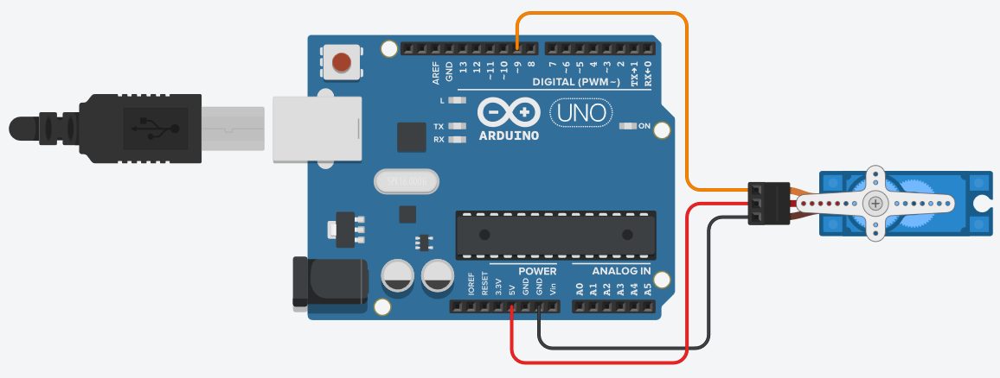
Wiring Connection Tip
Connecting the lab's solid-core wires directly into the servo connector will result in a weak mechanical connection. While this connection is sufficient for this exercise, you can push male header pins into the breadboard to serve as an intermediate connection for improved mechanical stability.
Procedure:
- Connect the circuit as shown in
Fig. 2 . -
Copy the Standard_Servo_Example.ino sketch listed below:
Arduino code for the Standard_Servo_Example.ino Example
// This Example code is for use with the Controlling a Standard Servomotor exercise // // Include the servo library to allow for connection and control of servo motors #include <Servo.h> // define the macro pinServo1 as 9, to use for connecting the servo to pin 9 #define pinServo1 9 // Declare a servo motor class variable servo 1 Servo servo1; // ------------------------------------- // Setup function void setup() { // "attach" servo 1 to the defined pin servo1.attach(pinServo1); // set the neutral, centre, position for the servo servo1.write(90); // Alternte command for setting the neutral position //servo1.writeMicroseconds(1500); // wait until the servo has moved into position, (1000ms is more time than needed) delay(1000); } // ------------------------------------- // Loop Function void loop() { // start from the nuetral position, (90 degrees from the fully clockwise position) servo1.write(90); //servo1.writeMicroseconds(1500); // Alternate Command // wait until the servo has moved into position delay(1000); // move to 0 degrees, (fully clockwise) servo1.write(0); //servo1.writeMicroseconds(500); // Alternate Command // wait until the servo has moved into position delay(1000); // move to 180 degrees, (fully anti cloclwise position) servo1.write(180); //servo1.writeMicroseconds(2500); // Alternate Command // wait until the servo has moved into position delay(1000); } -
Looking at the code, above, you will see that the servo library had been included in the sketch. This external is library containing several functions that allow the Arduino to control a variety of servo motors. The Arduino reference library webpage for the servo library is located here:
https://www.arduino.cc/reference/en/libraries/servo/ Before you can use the servo control commands in your code, you must first perform the following operations in your code, (look at the code to see how this has been done):
- In the global scope:
- Include the servo library
#include <Servo.h> - Declare a servo motor object variable (e.g., Servo servo1;). This object is used by the Arduino environment to direct commands to a specific servo motor.
- In the
setup()function: - Link the servo motor object to an output pin using the 'attach()' method.
In 'Standard_Servo_Example.ino', we have declared a Servo object named
servo1, defined digital pin 9 as the control pin, and we attachedservo1to pin 9, using the following statement:servo1.attach(pinServo1);The servo motor is controlled using a Pulse-Width Modulation (PWM) signal. The active high duration of the PWM signal is typically bounded between \(1000\mu\text{s}\) and \(2000\,\mu\text{s}\), with a pulse repetition rate between \(40\,\text{Hz}\) and \(200\,\text{Hz}\) (a period between \(5\,\text{ms}\) and \(25\,\text{ms}\)).
The center or neutral position of the servo is commanded using a \(1500\mu\text{s}\) pulse width. Typically, the \(+90^\circ\) clockwise position is commanded with a pulse width of approximately \(500\mu\text{s}\), and the \(-90^\circ\) counter-clockwise position is commanded with a pulse width of approximately \(2500\mu\text{s}\). These \(90^\circ\) position pulse widths often vary slightly between servo models, so you may need to adjust these timings for your specific hardware.
The servo library has two functions for controlling the position of the servo:
write(): Commands the target angle directly in degrees.writeMicroseconds(): Commands a specific pulse-width duration in microseconds to the output pin.
The
write()function may not be precise for all servo motor models. You should evaluate the positioning accuracy of bothwrite()andwriteMicroseconds()for applications that require accurate output angles. -
Look at the Standard_Servo_Example.ino code, and see how the servo library has been used, how a servo is declared and attached to the system.
- Run the sketch and observe its operation
Controlling a Standard Servo with an External Power Supply
The previous exercise demonstrates how to connect and power a small servo directly from the pins of the Arduino board. When operating multiple small servos or larger servos, the Arduino's onboard power supply cannot satisfy the load requirements. This can cause the servos to malfunction or lead to unpredictable system behavior caused by a
This section describes how to power servos using an external power supply while maintaining control from the Arduino.
The SG90 is a low-power servo motor and can be driven directly from the Arduino board power supply, as shown in
To connect a larger servo to the system, you must use an external power supply to power the motor, as illustrated in

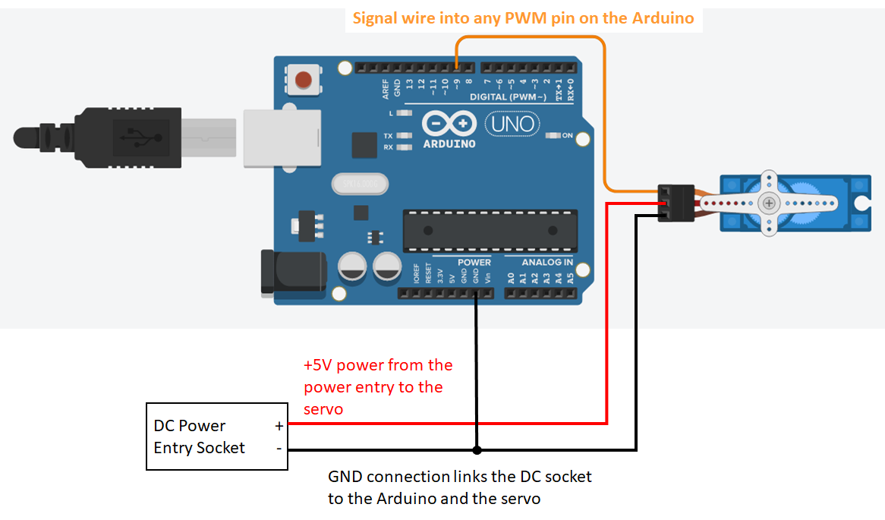
The pin connections for the external DC power jack (provided in the mechatronics kit box) are shown in
Linear mapping of a Value to a Measurement
In some cases, a sensor measurement can be linearly mapped from an input variable to a meaningful engineering value. In this exercise, you can map the analog-to-digital converter (ADC) measurement value from the potentiometer (ranging from \(0\) to \(1023\)) to a servo angle between \(90^\circ\) and \(0^\circ\) (representing the lolly stick between horizontal and vertical orientations).
The map() function provides linear calibration and scaling between an input measurement and a real-world parameter. In this exercise, you will pass the ADC measurement value as the input to the map() function and use its output to generate the position command for the servo motor.
map() Function Documentation
Refer to the map() function page from the Arduino Language Reference for a description:
Assessed Exercise: Driving the MG996 Servo on the front of the Robot Chassis
Before Starting This Exercise
Ensure that you have the servo and external power supply connected as described in the
The aim of this exercise is to demonstrate that you can operate a standard servo motor powered from an external supply and reset it to its neutral position.
Procedure:
- Before starting this exercise, remove the
lolly stick assembly from the MG996 servo on the robot chassis - Write a program to reset the servo motor to its neutral position using the command:
servo1.write(90); - While the servo motor is held in the neutral position, reattach the
lolly stick assembly , with the arm as close to horizontal as the servo shaft splines allow. - Write a second program (the assessed portion) to perform the following sequence:
- Upon reset or initial execution, the servo arm (lolly stick assembly) must move to the horizontal position.
- Note: You must tune the initial command angle in software to achieve true horizontal, as
servo1.write(90);alone may not align precisely.
- Note: You must tune the initial command angle in software to achieve true horizontal, as
- Maintain the horizontal position for \(1\,\text{s}\).
- Rotate the servo arm to the vertical position and hold it for \(1\,\text{s}\)
- Repeat the horizontal-to-vertical movement sequence once more.
- After an additional \(1\,\text{s}\) delay, continuously map the lolly stick angle to the potentiometer input:
- An ADC value from \(0\) to \(1023\) must map linearly to a servo command angle from approximately \(90^\circ\) down to \(0^\circ\) (corresponding to horizontal through vertical positions).
- Upon reset or initial execution, the servo arm (lolly stick assembly) must move to the horizontal position.
!!! !!! Note "Calibrating Servo Angles" You must adjust the mapped target angles to position the servo arm as close to horizontal and vertical as possible. A commanded servo demand of \(90^\circ\) is rarely perfectly horizontal, and \(0^\circ\) is rarely perfectly vertical.
Power Supply Requirement
The power supply for your servo MUST be provided by the external power supply and not from the Arduino \(+5\,\text{V}\) rail. The GND lines of the Arduino, external power supply, and servo motor must all be connected to the same ground node.
Danger: Risk of damage to your Laptop motherboard
If you connect the \(+5\,\text{V}\) pin of the Arduino board directly to the external power supply, you risk destroying your laptop's motherboard by sending a voltage spike back through the USB cable when the servo motor operates.
Please read the
The University of Sheffield and the Centre for Engineering Education (CEE) accept no responsibility for damaged personal devices caused by incorrect wiring. We strongly recommend using University IT equipment during practical sessions to mitigate the risk of damage to your personal devices.
Exercise Assessment
What we expect to see from your demonstration?
Your Servo must be powered from the external power supply during this exercise.
- When the Arduino is reset, or initially programmed, the servo arm (lolly stick assembly) should be set as close to horizontal as possible.
- You will need to adjust the initial angle of the servo in code to achieve this.
- The servo should wait 1 second before raising to as close to the vertical position as possible.
- The servo should wait 1 second before dropping to the horizontal position.
- The servo should wait 1 second before raising again to the vertical position.
- After 1 second, the servo should track the servo position, such that:
- When the potentiometer is in the far right position, the lolly stick is horizontal.
- When the potentiometer is in the far left position, the lolly stick is vertical.
- The lolly stick position tracks the potentiometer with a linear mapping.
Now Get Your Work Marked by a GTA
Once you have completed your code and are satisfied with its operation, you should show your work to a GTA for marking.
DC Motor Exercise
GTA Marking
This is an assessed Exercise. When you have completed the Assessed Exercise, you should show your work to a GTA to get marked.
Prerequisite Hardware Setup
Before starting these exercises, ensure that you have completed the circuit on the robot chassis as illustrated in
The following video is a quick demonstration of the final outcome from this exercise:
Introduction
The aim of this exercise is to control a DC motor from an Arduino using a DC motor driver interface and a Pulse-Width Modulation (PWM) signal.
PWM Control for the DC Motor
Pulse-Width Modulation (PWM) is a method for encoding information into a rectangular pulse train. Generally, the signal period \(T_{\text{s}}\) (and hence the frequency) is held constant while the pulse width is varied; this definition will be used for the remainder of these laboratory sessions.

PWM can be used in several ways, the most common being to "chop" a DC voltage to reduce its average value, as illustrated graphically in
$$ V_{ave} = \frac{1}{T} \int_{t_0}^{t_2} V_{in} dt = \frac{t_{on}} {T_{s}}V_{in} $$
where \(V_{\text{in}}\) is the supply voltage, \(V_{\text{ave}}\) is the average output voltage, and \(T_{\text{s}}\) is the PWM switching period.
This operating principle is used in most power electronic converters to control energy delivery to downstream loads, such as electric motors. Another application of PWM is encoding numerical information as a function of the on-time duration \(t_{\text{on}}\) while maintaining a constant switching period \(T_{\text{s}}\). The receiving system decodes the pulse duration to perform a corresponding action.
During these laboratory exercises, you will drive two distinct types of actuators:
- A DC motor: To control the rotational speed, you will adjust the PWM signal to regulate the average voltage supplied to the motor windings. A dedicated motor driver circuit is required between the Arduino and the motor to supply its current demand.
- A standard servo motor: This servo motor rotates between \(0^\circ\) and \(180^\circ\), where the output angle is controlled using a \(+5\,\text{V}\) pulse signal bounded between \(1\,\text{ms}\) and \(2\,\text{ms}\), utilizing an internal potentiometer for closed-loop position feedback.
The DC motor differs fundamental from the standard servo motor in its control methodology. For servo motors, the average voltage of the PWM signal is not used to regulate supply power (as it is for DC motors). Instead, the PWM pulse duration \(t_{\text{on}}\) - bounded between \(1\,\text{ms}\) and \(2\,\text{ms}\) - acts as an encoded command signal corresponding to the target rotational position for the servo's internal closed-loop controller.
Code Example: Control LED Intensity Example
In this example, we will use the analogWrite() function to generate a PWM signal to vary the voltage supplied to an LED, thereby adjusting its brightness..
The analogWrite() function accepts an integer value between \(0\) and \(255\), which maps linearly to a PWM output duty cycle between \(0\%\) and \(100\%\), as illustrated in

(

The Arduino language reference page for the analogWrite command can be found at: https://www.arduino.cc/reference/en/language/functions/analog-io/analogwrite/.
Procedure:
-
The circuit requirement for this exercise is the LED Pattern circuit, which should already be built on your robot chassis.
-
Use the following example code to run this exercise:
LED Fade.ino Example//This sketch is the Control LED Intensity Example from the Introduction to // Arduino – PWM control of Actuators laboratory worksheet // define a macro for the LED pin number #define LEDpin 11 // ------------------------------------- // Setup function void setup() { // define the pin mode for the LED pin pinMode(LEDpin, OUTPUT); } // ------------------------------------- // Lop Function void loop() { // Increment a variable, i, from 0 and 255 for (int i = 0; i < 256; i++) { // modify the PWM signal, by passing the variable, i, to the //analogWrite function analogWrite(LEDpin, i); //delay the program by 10ms delay(10); } // Decrement a variable, i, from 255 to 0 for (int i = 255; i >= 0; i--) { // modify the PWM signal, by passing the variable, i, to the //analogWrite function analogWrite(LEDpin, i); //delay the program by 10ms delay(10); } } -
Run the program and observe how varying the values passed to the
analogWrite()function affects the LED brightness.
Using the TB6612FNG breakout board
A DC motor cannot be powered directly from the output pins of an Arduino board because the motor's current draw exceeds the pin ratings, which can permanently damage the microcontroller. To safely interface the motor, a power electronic driver circuit is required to handle the higher load currents. During this exercise, you will use a TB6612FNG motor driver breakout board, as shown in
This section provides useful background information to help you get started with the TB6612FNG breakout board. While it does not cover every detail, numerous online guides and datasheets describe how to interface this board with an Arduino microcontroller.
The TB6612FNG from Toshiba is a monolithic H-bridge driver IC—a single integrated circuit containing the power electronic switching and control circuitry required to drive electric motors. The IC features two independently controlled H-bridge output channels. Refer to the datasheet linked in the following section for complete electrical specifications.
In isolation, surface-mount ICs are difficult to prototype on breadboards without custom PCBs. Breakout boards bridge this gap by exposing the surface-mount chip pins via standard breadboard-compatible headers, allowing easy connection to microcontrollers like the Arduino.
The TB6612FNG breakout board, shown in
Online Documentation from the Manufacturer and External Sites
Semiconductor manufacturers provide technical specifications for their devices through datasheets, along with application notes and reference materials for complex components. Below are links to relevant manufacturer documentation and application guides:
- TB6612FNG Data sheet (TOSHIBA):
TB6612FNG Data sheet . - SparkFun Breakout Board Datasheet:
SparkFun Motor Driver - Dual . - STMicroelectronics Application Note:
Applications of Monolithic Bridge Driver . - STMicroelectronics Technical Presentation:
An Introduction to Electric Motors .
H-Bridge Circuit and Example Code
The TB6612FNG IC contains two independent H-bridge circuits. This guide focuses on the operation of a single H-bridge channel (Channel B). The motor output pins for Channel B are BO1 and BO2, controlled via the PWMB input signal. The direction of rotation is configured using control inputs BI1 and BI2. (The detailed theoretical operation of H-bridge circuits is covered in course lecture materials.)
Before proceeding, verify that you have constructed the H-bridge circuit described in the
Operation of the TB6612FNG Driver Board Circuit
Each H-bridge output channel is configured using two directional control inputs (IN1 and IN2), paired with a dedicated PWM input (PWM). The operational logic for the H-bridge channel is summarized in
indicates that the motor direction is configured using the directional control inputs (IN1 and IN2, or BI1 and BI2 for Channel B), while motor speed is controlled via the PWM input (PWMB for Channel B). The standby pin (STBY) sets the driver board into a low-power sleep state when driven LOW.
Motor Wiring Polarity
The wiring polarity of the motor terminals determines whether a forward command results in clockwise or counter-clockwise rotation. Reversing the motor lead connections on output terminals BO1 and BO2 will invert the motor's rotational direction.
Example code is provided below to demonstrate basic motor operation. The analogWrite() function generates a PWM signal to set motor speed using the following duty-cycle parameters:
- 0% duty cycle, (always Low):
analogWrite([PWM pin number], 0) - 100% duty cycle, (always High):
analogWrite([PWM pin number], 255) - Intermediate duty cycle (1% to 99%): Write values between
1and254to theanalogWrite()function.
The official Arduino language reference for the analogWrite() function is available at:
https://docs.arduino.cc/language-reference/en/functions/analog-io/analogWrite/
Sample Code for the TB6612FNG Driver Board
// TB6612FNG Driver Board Sample board
//
// Author: Ben Taylor
// University of Sheffield
// Date: September 2024
//
const int pinBI1 = 7; // Pin allocation for BI1
const int pinBI2 = 8; // Pin allocation for BI2
const int pinPWM = 5; // Pin allocation for the PWMB pin
boolean BI1 = 0; // BI1 pin value
boolean BI2 = 0; // BI2 pin value
boolean standBy = 0; // standBy pin Value
boolean rotDirect = 0; // Rotation direction variable
unsigned char pwmValue = 0; // PWM value to be written to the output
void setup()
{
// Assign the digital I/O pin directions
pinMode(pinBI1, OUTPUT);
pinMode(pinBI2, OUTPUT);
pinMode(pinPWM, OUTPUT);
//Initialize the serial port
Serial.begin(9600);
// Set Initial values for BI1 and BI2 control function pins
BI1 = 1;
BI2 = 0;
// set an initial value for the PWM value
pwmValue = 200;
}
void loop()
{
// Write the BI1 and BI2 values to the configuration pins
digitalWrite(pinBI1, BI1);
digitalWrite(pinBI2, BI2);
// Write the pwnValue to the PWM pin
analogWrite(pinPWM, pwmValue);
// Display the board variable status to the Serial Monitor
Serial.print("PWM output value = ");
Serial.print(pwmValue);
Serial.print(", Standby = ");
Serial.print(standBy);
Serial.print(", BI1 = ");
Serial.print(BI1);
Serial.print(", BI2 = ");
Serial.println(BI2);
// wait 250ms
delay(250);
}
Assessed Exercise
During this exercise, you will modify the sample code provided above to implement proportional speed and direction control for a DC motor using an analog potentiometer.
Procedure:
-
Setup & Verification:
- Copy and paste the sample code for the TB6612FNG driver board into a new Arduino sketch.
- Read the code and inline comments thoroughly. Compile, upload, and run the sketch to verify hardware operation.
-
Control Implementation:
- Write a program that controls both the speed and direction of rotation of the DC motor using an analog input from a potentiometer.
- When the potentiometer is rotated to its extreme clockwise position, the motor must rotate at maximum speed in a clockwise direction (when viewed from the shaft end).
- When the potentiometer is rotated to its extreme counter-clockwise position, the motor must rotate at maximum speed in a counter-clockwise direction (when viewed from the shaft end).
- When the potentiometer is in its center position, the motor shaft must come to a complete stop (\(0\,\text{RPM}\)).
- The rotational speed of the motor must vary linearly between \(0\,\text{RPM}\) (center position) and maximum speed (at either extreme limit).
- Serial Monitor Diagnostics:
-
Print the following parameters to the Serial Monitor at regular intervals using descriptive labels:
- Analog-to-Digital Converter (ADC) raw value from the potentiometer pin (\(0\) to \(1023\)).
- Calculated PWM value passed to the analogWrite() function (\(0\) to \(255\)).
- Boolean output states for BI1, BI2, and STBY.
-
Exercise Assessment
What we expect to see from your demonstration?
- Demonstrate that you have fulfilled the requirements of the exercise with your working system.
- The mapping of the potentiometer to shaft speed is consistent with the description above.
- An external power supply is used to power the motor circuit, (Vm on the driver board).
- ADC measurement from the potentiometer, PWM value and control logic Boolean values are clearly labelled and displayed on the serial monitor.
- The serial monitor should update at a reasonable rate – 2 to 4 times a second.
Now Get Your Work Marked by a GTA
Once you have completed your code and are satisfied with its operation, you should show your work to a GTA for marking.
Interfacing the Incremental Encoder from the Gear Motor
GTA Marking
This is an assessed Exercise. When you have completed the Assessed Exercise, you should show your work to a GTA to get marked.
Prerequisite for this Exercise
Before starting this exercise, verify that you have completed the circuit on the robot chassis as illustrated in
Before you start this exercise, you should complete the
The following video is a quick demonstration of the final outcome from this exercise:
Introduction and Background
Rotary sensors measure the angular position and/or rotational speed of a rotating body (typically a shaft) using either analog or digital outputs. The term rotary encoder generally describes a digital rotational position sensor.
Rotary encoders fall into two primary categories:
- Absolute Position Encoders: Devices in this class output the exact angular position of the rotating shaft immediately upon power-up, without requiring an initial zero reference or homing sequence.
- Incremental Position Encoders: Devices in this class report relative changes in angular displacement from a starting reference point. Absolute position can only be determined if the system records a known initial start-up position or detects an explicit index pulse (Z-channel).
For additional background on encoder working principles, refer to the
Rotary speed can be measured directly using a rotary shaft encoder designed as a tachometer (though dedicated tachometers will not be covered further in this document). Alternatively, rotational speed (\(\omega\)) can be calculated from a position encoder by measuring angular displacement (\(\Delta\theta\)) over a known sampling time interval (\(\Delta t\)):
Sensing technologies for position encoders vary across designs, with optical and magnetic sensing being the two most common approaches. The incremental encoder integrated into the FIT0450 geared DC motor (included in your Mechatronics kit) is a magnetic quadrature encoder. Quadrature encoders output two channel square waves, designated Channel A and Channel B, which are phase-shifted relative to each other by \(90^\circ\), as illustrated in

Analogue Sensors vs. Digital Switch Sensors
An analogue sensor produces a continuous, variable output signal (such as a changing voltage level) that typically requires external signal conditioning or filtering before being processed by a microcontroller's ADC.
In contrast, a digital switch sensor incorporates internal signal-conditioning circuitry (e.g., Schmitt triggers or comparators) to directly output clean HIGH (\(5\,\text{V}\)) or LOW (\(0\,\text{V}\)) logic levels, enabling direct connection to digital GPIO pins.

As the magnetic disc rotates, each transition of a north pole past a Hall-effect switch toggles the output logic state from 0 to 1 (and back to 0 when a south pole passes). This continuous transition produces a digital square wave at the output of each switch sensor. The encoder contains two outputs, Channel A and Channel B, corresponding to the two Hall sensors. The physical sensors are spatially positioned \(90^\circ\) electrically out of phase around the disc's circumference. Consequently, outputs A and B generate square waves offset by \(90^\circ\), as shown in
For the FIT0450 motor, the magnetic disc contains \(8\) pole pairs, yielding \(8\) full square-wave pulses per sensor for a single revolution of the motor armature shaft. Because the motor is fitted with a \(120:1\) reduction gearbox, one complete revolution of the main output shaft corresponds to:
Counting both rising and falling edges across both channels quadruples the available measurement resolution (\(960 \times 4 = 3,840 \text{ state transitions/rev}\)). Base pulse-counting accuracy without quadrature edge decoding corresponds to \(960 \text{ PPR}\), equivalent to:
At higher rotational speeds, encoder outputs generate high-frequency pulse trains. Polling pin states sequentially inside the standard Arduino loop() function is unreliable; if the microcontroller is executing other tasks during a pin transition, pulses will be missed, leading to cumulative position errors. To ensure reliable signal processing, encoder channels should be sampled using hardware interrupts. The microcontroller's interrupt module detects logic state changes on dedicated General Purpose Input/Output (GPIO) pins, temporarily pausing main thread execution to instantly run a specialized function known as an Interrupt Service Routine (ISR).
Reading a quadrature encoder relies on level-change interrupts configured on the microcontroller's digital input pins connected to Channels A and B. Whenever a logic-level transition occurs on either channel, the main execution thread is interrupted and the corresponding Interrupt Service Routine (ISR) is immediately executed. Consequently, processor tasks are temporarily paused to service the encoder event, preventing lost pulses.
In the case of reading the quadrature encoder, we use a level change interrupt on the pins of the microcontroller, attached to the quadrature encoder. Each time there is a level transition in either output A or B, the main code is interrupted and the ISR is run by the microcontroller. This means that whatever the microcontroller is busy doing, the execution is stopped to process the interrupt, and no pulses are lost.
Interrupts can be configured in multiple ways to track encoder outputs. Achieving maximum resolution (\(4\times\) decoding) requires configuring interrupts on both input pins, whereas using a single interrupt on one channel yields half the resolution (\(2\times\) decoding).
The dual-interrupt method, outlined in
| ROTATION: | OUTPUT A: | OUTPUT B: | Which ISR? | COUNT: |
|---|---|---|---|---|
| CW | 0→1 | 0 | A | +1 |
| 1 | 0→1 | B | +1 | |
| 1→0 | 1 | A | +1 | |
| 0 | 1→0 | B | +1 | |
| CCW | 0→1 | 1 | A | -1 |
| 1 | 1→0 | B | -1 | |
| 1→0 | 0 | A | -1 | |
| 0 | 0→1 | B | -1 |
The code snippet below provides a framework for configuring digital pins D2 and D3 on the Arduino Uno as interrupt-capable inputs. Using the attachInterrupt() function, these pins are assigned to their respective ISRs, ChannelA() and ChannelB(), which trigger on any state transition (CHANGE).
#define PINA 2 // A output of the encoder attached to PIN 2 of the Arduino
#define PINB 3 // B output of the encoder attached to PIN 3 of the Arduino
volatile long enc_count = 0; // Pulse count from the quadrature encoder
void setup(){
// Initialize the A and B input pins
pinMode(PINA, INPUT);
pinMode(PINB, INPUT);
// Attach interrupt to PINA. When the pin changes state, the function
// channelA() is called.
attachInterrupt(digitalPinToInterrupt(PINA),channelA, CHANGE);
// Attach interrupt to PINB. When the pin changes state, the function
// channelB() is called.
attachInterrupt(digitalPinToInterrupt(PINB),channelB, CHANGE);
}
void loop() {
...
}
void ChannelA(){
...
}
void ChannelB(){
...
}
For a detailed technical description of the function, refer to the official Arduino attachInterrupt() Reference Guide.
The CHANGE interrupt mode is passed to attachInterrupt() to ensure an interrupt fires on both rising (\(0 \rightarrow 1\)) and falling (\(1 \rightarrow 0\)) signal edges on Channels A and B, maximizing pulse count resolution.
The volatile Keyword Qualifier
The enc_count global variable is declared with the volatile qualifier. Any variable modified within an ISR and read in the main loop must be qualified as volatile. This directs the compiler to load the variable from RAM rather than caching it in a CPU register, ensuring thread-safe reads during asynchronous interrupt events.
For further information, consult the Arduino volatile Reference Guide.
Arduino Hardware Interrupt Pin Allocation
On the Arduino Uno, hardware interrupts are available strictly on digital pins D2 (Interrupt 0) and D3 (Interrupt 1).
On the Arduino Mega 2560, pins D2, D3, D18, D19, D20, and D21 support external interrupts. Note that pins D20 (SDA) and D21 (SCL) cannot be used for interrupts if \(\text{I}^2\text{C}\) bus communication is active (though \(\text{I}^2\text{C}\) is not utilized by the sensors in this Mechatronics kit).
Before implementing closed-loop DC motor control, converts raw pulse counts into physical engineering units—such as output shaft revolutions or angular position (\(\theta\)). Calculate output shaft revolutions using:
To compute angular displacement in degrees (\(^\circ\)):
Quadrature Edge Counting & Resolution Scaling
The equations above assume a pulse count based on full square-wave cycles (\(1\times\) resolution). Because the provided dual-ISR framework triggers on every rising and falling edge across both channels (\(4\times\) quadrature state decoding), the total accrued edge count is four times higher.
Reading the Output of the Incremental Encoder
The aim of this exercise is to sample the rotary encoder position using interrupts and continuously output the accumulated position data to the Arduino IDE Serial Monitor.
Before proceeding, verify that all hardware wiring and pin connections comply with the specifications in the
The following code template below provides the foundation for reading the FIT0450 incremental encoder. This sketch is incomplete; you must apply the technical principles covered in the preceding theory sections to implement the missing logic during the assessed exercise below.
#define ENC_K [Insert the value for the FIT0450 Gearmotor] //Number of edges
// per revolution of the output shaft
#define PINA 2 // A output of the quadrature encoder attached to PIN 2
#define PINB 3 // A output of the quadrature encoder attached to PIN 3
//These two variables are declared as volatile because they are updated
// within an ISR
volatile long encCount; // Pulse count from the quadrature encoder
volatile float wheelAngle; // Angle of the output shaft of the gear motor,
// attached to the wheel
// initialise the lastDisplay variable
long lastDisplay = 0;
#define delayDisplay 250
void setup() {
Serial.begin(9600);
pinMode(PINA, INPUT);
// Attach interrupt to PINA. When the pin changes state, the function channelA()
// function is called.
attachInterrupt(digitalPinToInterrupt(PINA),channelA, CHANGE);
// Attach interrupt to PINB. When the pin changes state, the function channelB()
// function is called.
attachInterrupt(digitalPinToInterrupt(PINB),channelB, CHANGE);
encCount = 0;
wheelAngle = 0;
}
void loop() {
// Update the Serial Monitor every 250ms
if (millis() >= lastDisplay + delayDisplay) {
// update lastDisplay to the current millis() time
lastDisplay = millis();
// construct the serial monitor messages
Serial.print("Encoder Pulse Count = ");
Serial.print(encCount);
Serial.print("Wheel angle = ");
Serial.print(wheelAngle);
Serial.println("°");
}
}
void channelA() {
// Use if else statements to increment or decrement the encCount variable
// Use information in the table in the Encoder section of the The Rotary
// Position Encoder section of the laboratory Documentation.
// Focus on the table rows where Output A is changing
// Use digitalread() to acquire the states of PINA and PINB
if([insert a logic statement here]) {
if([insert a logic statement here]){
encCount++; // Encoder rotating in one direction, e.g. clockwise
}
else {
// Encoder rotating in the opposite direction, e.g. counter clockwise
encCount--;
}
}
else{
if([insert a logic statement here]){
encCount++; // Encoder rotating in one direction, e.g. clockwise
}
else {
// Encoder rotating in the opposite direction, e.g. counter clockwise
encCount--;
}
}
//compute the angle of rotation of the wheel using the pulse count, encCount
wheelAngle = ;
}
void channelB() {
// Use function channelA() as a template
// This time focus on the rows of the table where Output B is changing
}
Quadrature Edge Count vs. Pulse Count
This dual-interrupt implementation detects every rising and falling logic edge across both Channel A and Channel B signals (\(4\times\) quadrature edge decoding), rather than counting full square-wave pulses. Consequently, the accumulated count will be four times greater (\(4\times\)) than the raw pulse count.
Reading the Rotary Encoder Exercise
The aim of this exercise is to implement and verify rotary encoder signal acquisition prior to integrating DC motor actuation.
While this exercise is non-assessed, completing it is strongly recommended before attempting subsequent tasks, as it establishes the foundational pulse-counting functionality required for the
Procedure:
- Copy and paste the starter code template provided above into a new Arduino sketch.
- The ISR for Channel A, ChannelA(), is partially implemented. Complete the function by applying the state-evaluation logic defined in
Table 1 . - Based on your implementation of ChannelA(), write the corresponding logic for the ChannelB() ISR function.
- Modify the code to update and print the encoder values to the Serial Monitor every \(250\,\text{ms}\).
- Ensure that the ENC_K constant is set to the total number of digital edges per output revolution, rather than the raw pulse count.
- Upload the code to your Arduino board and manually rotate the motor wheel. Verify that the Serial Monitor outputs accurate, real-time positional data and correctly indicates direction changes.
Avoid Using the Delay() Function
For the timing of the serial monitor and other events, you should use the millis() method in the TwoInterruptEncoder.ino template file, and not use the delay() method.
Using blocking functions like delay() is bad practice in embedded software development; it freezes processor execution, delays non-interrupt loop tasks, and causes significant timing jitter in multitasking systems, preventing your code from executing in a deterministic manner.
Assessed Exercise
The aim of this exercise is to measure the angular position of the motor wheel using the quadrature encoder and control the motor actuation to position the wheel accurately across a sequence of target setpoints.
During this exercise, you are required to integrate your implementations from the following preceding tasks:
- The
Reading the Rotary Encoder Exercise , above - The
DC Motor: Assessed Exercise
Procedure:
Write a program that can rotate the wheel connected to the DC motor according to the following cycle:
- From an initial starting point, rotate the wheel 45° clockwise
- Wait for 1 second
- Rotate the wheel 45° anticlockwise (back to the starting position)
- Wait for 1 second
- Rotate the wheel 90° clockwise
- Wait for 1 second
- Rotate the wheel 90° anticlockwise
- Wait for 2 seconds, then repeat the sequence.
- On the serial monitor, you should display:
- The time in seconds from the start of the demo
- You should calculate this, not use the serial monitor time stamp
- The PWM output to the motor
- The shaft position of the motor in degrees.
- The time in seconds from the start of the demo
Non-Blocking Timing Requirements
Remember: do not use blocking functions such as delay() in your code. Implement non-blocking timing using the millis() function, as demonstrated in the TwoInterruptEncoder.ino template file above.
Exercise Assessment
What we expect to see from your demonstration?
- Demonstrate that you have fulfilled the requirements of the exercise with your working system.
- The rotational sequence for the output shaft as described above.
- An external power supply is used to power the motor circuit, (Vm on the driver board).
- Demonstration time in seconds, motor PWM value, control logic Boolean values to the driver board, and the motor shaft angle, are clearly labelled and displayed on the serial monitor.
- The serial monitor should update at a reasonable rate – 2 to 4 times a second.
Now Get Your Work Marked by a GTA
Once you have completed your code and are satisfied with its operation, you should show your work to a GTA for marking.
Extension Exercise: Reading multiple encoders efficiently. (Non-Assessed)
Formative Exercise
This extension exercise is non-assessed and formative. Completing this task is recommended, as the interrupt techniques covered here may be very useful for your group project.
The aim of this exercise is to implement Pin Change Interrupts (PCINT) on micro-controller I/O ports rather than relying exclusively on dedicated external interrupt pins (INT0/INT1).
Note: Pin Change Interrupts are a hardware feature specific to AVR microcontrollers (e.g., ATmega328P). Implementation details and register configurations may vary across different architecture families.
When controlling differential-drive or multi-axis mobile robots, multiple quadrature encoders must be sampled simultaneously. On the Arduino Uno, external hardware interrupts via attachInterrupt() are constrained strictly to digital pins D2 and D3. Upgrading to a larger development board—such as the Arduino Mega 2560—provides additional external interrupt pins, but scaling to higher encoder counts requires a more flexible architectural solution.
A scalable and hardware-efficient approach for acquiring two or more quadrature encoders is utilizing Pin Change Interrupts (PCINT). On AVR microcontrollers, General Purpose Input/Output (GPIO) pins are organized into 8-bit hardware Ports. For instance, on the Arduino Uno (ATmega328P), physical I/O pins map directly to Port B, Port C, and Port D, as illustrated in

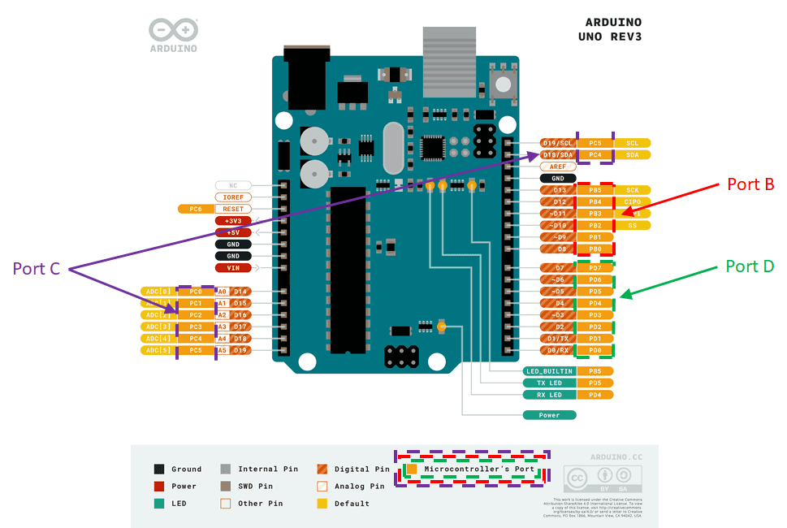
In this exercise, you will consider Port D pins on digital I/O D0 through D7, as illustrated in
Direct Hardware Register Configuration
This advanced method bypasses standard Arduino framework abstraction functions like attachInterrupt(). Instead, you will directly configure the microcontroller's low-level Control Registers (PCICR, PCMSK2), providing faster execution and lower interrupt overhead.
To implement Pin Change Interrupts (PCINT) on Port D, execute the following configuration steps:
- Pin Grouping: Identify the input pins to attach interrupts to, ideally selecting pins on a single 8-bit port to simplify state masking.
- Port Enable: Enable the Pin Change Interrupt Control Register (
PCICR) for the selected port bank. - Pin Masking: Select specific interrupt pins by updating the corresponding Pin Change Mask Register (
PCMSK2). - ISR Implementation: Write the dedicated Interrupt Service Routine vector (e.g.,
ISR(PCINT2_vect)).- Within the ISR, evaluate the port's current state against its previous state to determine which specific pin triggered the transition and increment/decrement position counters accordingly.
For a detailed walkthrough of register flags and hardware vectors, refer to the following article:
The principal advantage of direct register configuration is flexibility: almost any microcontroller pin can serve as an interrupt source, significantly expanding encoder channel capacity.
Consider a dual-encoder setup on an Arduino Uno:
- Encoder 1 (Left): Channel A \(\rightarrow\) Pin
D3, Channel B \(\rightarrow\) PinD4 - Encoder 2 (Right): Channel A \(\rightarrow\) Pin
D5, Channel B \(\rightarrow\) PinD6
As shown in PORTD and PIND registers), allowing a single ISR vector to service both quadrature encoders simultaneously.
The code snippet below outlines the basic register initialization sequence required to configure Pin Change Interrupts (PCINT) on Port D:
-
*Enable Port D Interrupt Bank: Activate the Pin Change Interrupt bit for Port D (
PCIE2) in the Pin Change Interrupt Control Register (PCICR): -
Clear Mask Register: Reset the Port D Pin Change Mask Register (
PCMSK2) to clear any residual bit configurations: -
Set Pin Interrupt Masks: Unmask digital pins
D3,D4,D5, andD6(PCINT19throughPCINT22) inPCMSK2:
Bitwise masking explicitly informs the microcontroller which digital pins must trigger the interrupt routine and which pins should be ignored. Masking unneeded pins prevents spurious interrupts from pin state toggles on unrelated I/O channels (such as serial UART communications on D0 and D1).
void setup()
{
PCICR |= 0b00000100;
PCMSK2 = 0;
PCMSK2 |= 0b01111000;
}
void loop()
{
// Put your main code here, to run repeatedly:
}
// This is the interrupt service routine for the Port D pin change interrupt
// Nore: you cannot define the name for this ISR
ISR (PCINT2_vect){
}
Interrupts are now enabled exclusively on the four encoder channels: pins D3 through D6. Whenever a logic edge transition occurs on any of these masked pins, the Interrupt Service Routine vector ISR(PCINT2_vect) automatically triggers.
Note: PCINT2_vect is the hardware Interrupt Vector location for `Port D** on ATmega microcontrollers and must be defined explicitly in your Arduino code.
An efficient approach for decoding multiple quadrature encoders inside a single ISR is implementing a Lookup Table (LUT) state machine. The lookup table yields a direction value (\(+1\), \(-1\), or \(0\)) to increment, decrement, or leave the position counter unchanged by comparing the previous measured state against the current measured state of Channels A and B.To evaluate state transitions, construct a 4-bit composite state variable for each encoder structured as shown in

Using this encoding, one can create the following
Where: No = No rotation (current state = previous state), and NA = Not applicable (Impossible condition. Only one bit at a time can change)
Comparing Quadrature State Logic Tables
Analyse
Compare the corresponding rows between both tables to understand how the 4-bit composite state values in
The resulting 4-bit binary state variable yields a decimal index between \(0\) and \(15\) (\(2^4 = 16\) total state combinations). This index directly queries a lookup table (LUT) array containing the transition values (\(+1\), \(-1\), or \(0\)) derived from Column 5 of Table 4. It is essential to retain all 16 entries—including invalid or non-adjacent state transitions—to maintain fixed-array indexing boundaries.
The lookup table array is initialized as:
The complete implementation script, DualEncoderUsingPinChangeInterrupts.ino, below, demonstrates dual quadrature encoder decoding across digital pins D3, D4, D5, and D6 using Port D Pin Change Interrupts.
Procedure:
- Using the technique described above, modify your Arduino code that you wrote for Exercise 2 to use the pin change interrupt for a single encoder attached to pins D2 and D3.
- When you have this working, try changing the encoder connection pins and modify your script accordingly.
// Initialise the encoder counter variables
volatile long enc1_count = 0;
volatile long enc2_count = 0;
// Intialise a variable to to record the tick counter value
long tickValue = 0;
void setup() {
PCICR |= 0b00000100; // Activate the port D pin change interrupt on the
// pin change interrupt control register
PCMSK2 = 0; // Reset the port D pin change mask
PCMSK2 |= 0b01111000; // Select the interrupt pins of interest from the
// port D interrupt mask register
// Define the pin modes dor D3, D4, D4, D6
pinMode(4, INPUT);
pinMode(5, INPUT);
pinMode(6, INPUT);
pinMode(7, INPUT);
// Open the serial port at 9600 baud
Serial.begin(9600);
tickValue = millis(); // Record an initial tick counter value
}
void loop() {
if (millis() >= tickValue + 100) { // if 100ms has elapsed sine the last
// time the followin code block ran
tickValue = millis(); // Record the current tick counter value
// Display the current encoder counter values on the serial monitor
Serial.print("Encoder 1 Count = ");
Serial.print(enc1_count);
Serial.print("\tEncoder 2 Count = ");
Serial.println(enc2_count);
}
}
// This is the the interrupt service routine for the Port D pin change
// interrupt
// Note: you cannot define the name for this ISR
ISR(PCINT2_vect) {
static const int8_t lookup_table[] = {
0, -1, 1, 0, 1, 0, 0, -1, -1, 0, 0, 1, 0, 1, -1, 0 };
// Byte that stores the current and previous state of the encoder outputs
// for encoder 1
static uint8_t enc1_val = 0;
// Byte that stores the current and previous state of the encoder outputs
// for encoder 2
static uint8_t enc2_val = 0;
// Shift the previous current encoder value to the pervious position
enc1_val = enc1_val << 2;
// The following line is a compound instruction:
// Read prot D and use an AND mask to remove bit information, then Shift
// the data relating to D3 and D4 to the first 2 bits. OR this with the
// enc1_val register to form the 4-bit current and previous encoder variable
enc1_Val = enc1_val | ((PIND & 0b00011000) >> 3);
// Add the lookup table value relating to enc1_val to the encoder 1 counter
enc1_count += lookup_table[enc1_val & 0b00001111];
// Shift the previous current encoder value to the pervious position
enc2_val = enc2_val << 2;
// The following line is a compound instruction:
// Read prot D and use an AND mask to remove bit information, then Shift
// the data relating to D5 and D6 to the first 2 bits. OR this with the
// enc1_val register to form the 4-bit current and previous encoder variable
enc2_Val = enc2_val | ((PIND & 0b01100000) >> 5);
// Add the lookup table value relating to enc2_val to the encoder 2 counter
enc2_count += lookup_table[enc2_val & 0b00001111];
}
Bitwise Shift Operators
Bit-shift operators manipulate variables directly at the binary bit level:
- Right Shift (
>>): Shifts all bits in an integer to the right by a specified number of bit positions. For example,y = x >> 3;shifts the binary representation ofxthree positions to the right and assigns the resulting value toy. - Left Shift (
<<): Shifts all bits to the left by a specified number of bit positions (e.g.,y = x << 2;shifts the bits ofxtwo positions to the left).
Kinematic Conversion
After calculating the total encoder count, convert this value into encoder or motor output shaft revolutions, or angle, using the appropriate scaling constants.
Advanced Exercises
Introduction to the More Advanced Exercises
Prerequisites and Assessment Policy
Before attempting these advanced exercises, ensure you have completed all basic exercises. Advanced exercises will not be signed off or awarded credit until all basic exercises have been formally assessed and marked.
These advanced exercises focus on integrating the fundamental interfacing and control concepts introduced in the
As discussed in the
- Advanced:
PI Control – IR Sensor Distance : Implement a Proportional-Integral (PI) distance-tracking controller using an infrared (IR) distance sensor as the feedback element for your robot. - Advanced:
PI Control – Encoder Position : Implement a PI position controller to track a target reference command and manage system transitions using a Finite State Machine (FSM). - Advanced:
PI Control – IR with Sequence : Integrate all basic and advanced control elements into a sequential control system for your robot.
The timeline presented in the
Each advanced exercise is formally assessed during lab sessions according to the criteria detailed in the
Warning
DO NOT leave all your exercises until the end of the 3rd laboratory session to be marked. We may not have sufficient time to assess multiple backlogged exercises before the session ends, which will result in lost marks. Have each exercise marked immediately upon completion.
Controlling the Distance of the robot from a Target
GTA Marking
This is an assessed Exercise. When you have completed the
Before Continuing
Before starting these exercises, you should ensure that you have completed all the
Introduction
In this exercise, you will implement a closed-loop distance control system designed to maintain a fixed offset between the robot chassis and a moving target. The system uses a Proportional-Integral (PI) controller, an infrared (IR) distance sensor for distance feedback, and PWM actuation signals routed to the motor driver board (TB6612FNG).
The schematic and breadboard wiring requirements for this task are identical to those defined in the
The following video demonstrates the closed-loop tracking response of the completed system:
The PI Controller Algorithm
The theoretical principles of Proportional-Integral (PI) control is covered in your course notes from other modules, and therefore, will not be comprehensively covered in this section.
A PI controller adjusts system behaviour, in this case, maintaining the relative distance between the robot chassis and a target object. The PI algorithm operates inside a closed-loop feedback structure, as illustrated in the block diagram below:

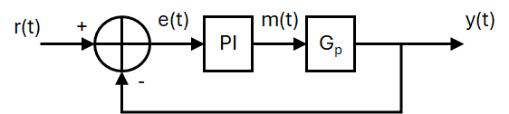
Where: \(R(t)\) is the reference signal, \(e(t)\) is the error signal, \(m(t)\) is the manipulated variable and \(y(t)\) is the system output, and \(Gp\) is the process dynamics of the robot chassis.
The structure of the PI controller is shown above, and can be represented with the following time domain equation:
A Block diagram of the above PI controller algorithm is shown below:

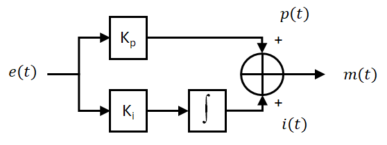
Where: \(e(t)\) is the error, \(p(t)\) is the proportional term, \(i(t)\) is the integral term, and \(m(t)\) is the manipulated variable. \(K_p\) and \(K_i\) are the controller gains.
The continuous-time PI controller algorithm cannot be directly executed on a digital microcontroller like the ATmega328P; it must first be discretized into a discrete-time difference equation.
To achieve this, split the controller output into separate proportional, \(p(t)\), and integral, \(i(t)\), terms, then discretize each component individually:
-
The proportional term: $ p(t)=K_p\,e(t)=K_p(r(t)-y(t)) $
- This discretizes to: $ p[k]=K_p\,e[k]=K_p(r[k]-y[k]) $, where: \(k\) is the current time step.
-
The integral term: $i(t)=K_i\int_{-\infty}^\infty e(t)\,dt \space\space \Longleftrightarrow \space\space \frac{di(t)}{dt}=K_i\,e(t) $
- We can use a Backward difference method, to discretize the derivitive function:
\[ \frac{di(t)}{dt}=K_i\,e(t) \space\space \Longleftrightarrow \space\space \frac{i[k]-i[k-1]}{\Delta T}=K_i\,e[n] \space\space \Longleftrightarrow \\ \space\space i[k] = i[k-1]+K_i\,e[n]\,\Delta T \]Where: \(\Delta T\) is the sample period for the controller.
-
Finally, the manipulated variable, \(m[k]\), can be found:
\[ m[k] = p[k] + i[k] = K_p \, e[k] + i[k-1] + K_i \, e[k] \, \Delta T \]
Integral Anti-Windup Protection
The integral term is susceptible to integral wind-up—a condition where persistent error causes the accumulated integral term to grow excessively beyond the physical actuation capability of the system.
To mitigate wind-up during large steps or saturated conditions, clamp the integral term (\(i[k]\)) within bounds corresponding to the maximum allowable PWM output range (i.e., \(\pm 255\) for the PWM implementation we are using):
where i is the floating-point variable storing the discrete integral state, \(i[k]\).
To maintain modularity and keep the main loop() concise, the discrete PI controller algorithm should be encapsulated inside a dedicated function, as demonstrated below:
int piControllerfunction(float contrKp, float contrKi,
float contrRef, float contrFB, float deltaT){
// Calculate the control error
contrError = contrRef - contrFB;
// Calculate the proportional term
float p = contrError * contrKp
// Calculate the integral term
float i = iPrev + (contrError * contrKi * deltaT)
// Bound the integral term to 255
if i > 255 {
i = 255;
}
else if (i < -255) {
i = -255;
}
// calculate the manipulated variable
float m = p + i
// Bound the manipulated variable to 255
if m > 255 {
m = 255;
}
else if (m < -255) {
m = -255;
}
// Save the integral term for the next iteration
iPrev = i;
// Recast the manipulated variable and return its value
return (int)m;
}
Implementation Details for calculatePI()
- Periodic Execution: The
calculatePI()function must be called at a fixed, deterministic sampling interval within themain()execution loop. In our example implementation, shown inFig 1 , a sample period of \(\Delta T = 10\,\text{ms}\) (\(100\,\text{Hz}\)) was used. - Persistent Integral State: The variable storing the previous integral accumulator (
iPrev) must persist across function calls. Declare and initialize it in global scope. - Function Parameters: The controller parameters—proportional gain (
contrKp), integral gain (contrKi), reference setpoint (contrRef), sensor feedback (contrFB), and sample period (deltaT), must be passed as floating-point arguments to the function.
A Note on Code Timing and Determinacy for Embedded Systems
When implementing a digital PI controller on an embedded microcontroller, maintaining strict, deterministic execution timing is critical. Sensor readings, error evaluation, and discrete integration must occur at precise, fixed time intervals (\(\Delta T\)). Unintended variations in sampling interval (sampling jitter) degrade control accuracy and can destabilize the feedback loop.
Using blocking delay functions like delay() creates inconsistent timing and prevents concurrent task execution. Because code execution time varies depending on conditional logic and system state, blocking delays make deterministic sampling nearly impossible to maintain.
To enforce consistent timing, use non-blocking scheduling based on the millisecond timer function millis(), as demonstrated in the loop()).
Assessed Exercise
In this exercise, you will write a program to maintain a fixed distance between the robot chassis and a target object. You will implement a closed-loop control system using a Proportional-Integral (PI) controller, an infrared (IR) sensor for distance feedback, and PWM actuation signals routed to the motor driver board (TB6612FNG).
Procedure:
- Ensure that you have the completed the building of the robot chassis and the electronic circuit, as described in the
Building the Robot Chassis document. -
A good starting point for the code for this exercise is the assessed exercise you completed for the
Motor and Encoder section -
The lolly stick should be raised to the vertical position at the start of the exercise demonstration.
- Write a program that maintains the robot chassis 30cm from a target, (the kit box stood up on its end works well for this):
- Uses the IR sensor to measure the distance to the target
- The robot chassis should be actuated using the yellow gear motor, with wheel attached, and driven from the driver board.
- A PI controller must be used to control the system in closed loop, with the output of the PI controller providing the PWM signal, and setting the BI1 and BI2 inputs to the driver board.
- The following controller gains should be used:
- \(K_p = -10\)
- \(K_i = -20\)
- Ensure the code you write does not use the
delay()function to control timing in the main function,loop(), instead use the millisecond tick timer function,millis(), to provide a timing source for your code execution.- In our example implementation, shown in
Fig 1 , we used a control sample period of \(\Delta T = 10\,\text{ms}\).
- In our example implementation, shown in
Note
The \(K_p\) and \(K_i\) values are negative because of the negative slope of the IR sensor response.
The controller values have been selected to show a slight overshoot when the target is moved, if used with a control sample period of 10ms.
Exercise Assessment
What we expect to see from your demonstration?
- At the start of the demonstration, your robot chassis should be placed approximately 30cm from the target, (the kit box stood up on its end works well for this).
- On resetting the Arduino, your lolly stick should go to the horizontal position, if it is not already there.
- After a one-second delay, the lolly stick assembly should raise to the vertical position.
- After a further one-second delay, the robot chassis should start to track the position of the target.
- You must show that you have implemented the position control using a PI controller.
Now Get Your Work Marked by a GTA
Once you have completed your code and are satisfied with its operation, you should show your work to a GTA for marking.
Closed Loop Control Using the Encoder as a Feedback Sensor
GTA Marking
This is an assessed Exercise. When you have completed the
Before Continuing
Before starting these exercises, you should ensure that you have completed all the
Introduction
In this exercise, you will implement a program to drive the robot chassis forward and backward through a predefined sequence of distance setpoints. The system must operate under closed-loop control using a Proportional-Integral (PI) controller with quadrature motor encoders providing position feedback.
Your firmware architecture should incorporate a Finite State Machine (FSM) to govern operational state transitions and sequence progression.
The following video demonstrates the closed-loop tracking response and sequential state progression of the completed system:
A Simple Finite State Machine
A Finite State Machine (FSM) is a software architecture design pattern used to govern system behavior based on discrete states and event-driven conditions. We will only consider their use in the most simple form.
An FSM defines operation using three primary elements:
- States: The operational modes or conditions of the system at any given moment.
- Triggers / Events: Inputs or conditions that occur within the system or environment.
- State Transition Conditions: Logical criteria evaluated to determine when the system transitions from one active state to another. A system can only switch states when its associated transition conditions are fully satisfied.
Consider a simple two-state system: a light bulb connected to an ON/OFF toggle switch. The bulb can exist in only one of two states: ON or OFF. Moving the switch to the "OFF" position triggers the transition from State 1 (ON) to State 2 (OFF). Conversely, moving the switch to the "ON" position fulfills the condition to transition from State 2 (OFF) back to State 1 (ON).
This sequential operation is represented in the state transition diagram shown in

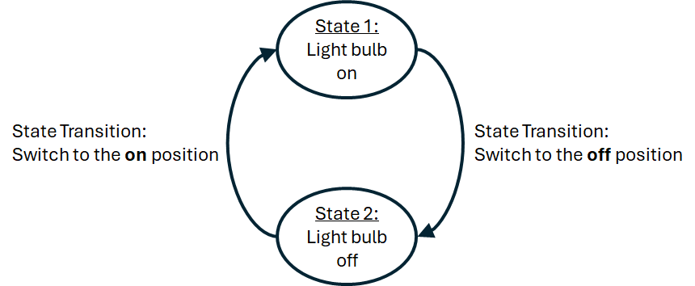
We can extend this concept to a four-state light dimmer system with variable intensity outputs: OFF, DIMMED, MEDIUM, and BRIGHT. System transitions are controlled by two pushbuttons: ON and OFF.
- Power-On Default: Upon system reset, the state machine automatically initializes to State 1 (OFF).
- ON Button Press: Increments brightness level, cycling sequentially through active states (State 2: DIMMED \(\rightarrow\) State 3: MEDIUM \(\rightarrow\) State 4: BRIGHT \(\rightarrow\) State 2: DIMMED, etc).
- OFF Button Press: Overrides current activity and forces an immediate transition back to State 1 (OFF) from any active state.
This operation is illustrated in the state transition diagram shown in
This is a very simple state machine example for a 2 state system. We can extend this idea to a system which varies the light level output between: off, dimmed, medium and bright, with state transitions defined by two buttons: on and off. When the system starts, the system automatically switches to state 1: off. The on button is used to switch the light on and toggle the system states between states 2, 3 and 4, to adjust the brightness, whereas if the off button is pressed, the system will always return to the off state. This operation is summarised on the state transition diagram,

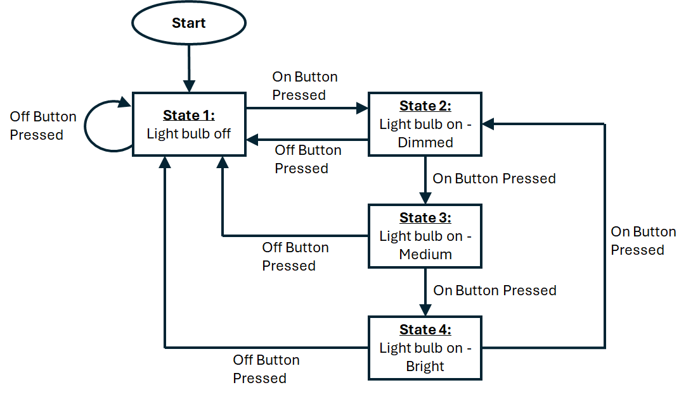
To implement the switch statement, where each case label defines the specific execution logic and transition checks for a single operational state, such that:
#define onPin 1 // On button pin
#define offPin 2 // Of button pin
#define outputPin 13 // LED output Pin
int state = 1; // Initialise the state variable to 1
int brightness = 0; // 0 = Off, 100 = Dimmed, 175 = Medium, 255 = Bright
int onButton = 0;
int offButton = 0;
void setup() {
pinMode(onPin, INPUT);
pinMode(offPin, INPUT);
}
void loop() {
// Read the states of the buttons
onButton = digitalRead(onPin);
offButton = digitalRead(offPin);
// Process the state machine
switch (state) {
case 1:
// Process the current state operations
brightness = 0;
analogWrite(outputPin,brightness);
// Check for state transition conditions
if (onButton == 1) state = 2; // if on button pressed, change to state 2
break;
case 2:
// Process the current state operations
brightness = 100;
analogWrite(outputPin,brightness);
// Check for state transition conditions
if (onButton == 1) state = 3; // if on button pressed, change to state 3
if (ofButton == 1) state = 1; // if off button pressed, change to state 1
break;
case 3:
// Process the current state operations
brightness = 175;
analogWrite(outputPin,brightness);
// Check for state transition conditions
if (onButton == 1) state = 4; // if on button pressed, change to state 4
if (ofButton == 1) state = 1; // if off button pressed, change to state 1
break;
case 4:
// Process the current state operations
brightness = 255;
analogWrite(outputPin,brightness);
// Check for state transition conditions
if (onButton == 1) state = 2; // if on button pressed, change to state 2
if (ofButton == 1) state = 1; // if off button pressed, change to state 1
break;
default:
// Process the unknown state operations
brightness = 0;
analogWrite(outputPin,brightness);
state = 1; // return to state 1
break;
}
delay(1000);
}
Note
The above code is functional, but the handling of the button presses is poor. This has been provided as a simple example of how to implement a simple state machine, with multiple state, and state transition events.
Assessed Exercise
In this exercise, you will develop firmware to move the robot chassis forward and backward through a sequence of designated target positions.
- Closed-Loop PI Position Control: Implement a Proportional-Integral (PI) control loop that uses quadrature motor encoder counts as position feedback. Open-loop time-based movement (e.g., driving motors forward for a fixed duration) is strictly prohibited.
- Finite State Machine Architecture: Use a Finite State Machine (FSM) to manage sequential system behaviour and switch target position setpoints.
- Non-Blocking Execution & Timing: All loop timing, interval scheduling, and state transitions must be executed using non-blocking timing with millis(). The use of blocking functions like delay() or delayMicroseconds() in your execution loop is strictly forbidden.
Design Hints & Recommended Tuning
- State-Driven Position Setpoints: The FSM states represent target position setpoints (\(r[k]\)) supplied to the PI controller. Evaluate and update the position control loop within the state machine execution block.
- Deterministic Sampling Period: Set the PI controller loop sampling period to \(\Delta T = 10\,\text{ms}\) (\(100\,\text{Hz}\)) using non-blocking millis() timing logic.
-
Initial Controller Tuning: Begin tuning with the following gain parameters:
\[K_p = 4.0, \quad K_i = 0.0\]These baseline parameters produce an underdamped (oscillatory) system response, allowing you to observe closed-loop transient dynamics before fine-tuning integral action.
Exercise Assessment
What we expect to see from your demonstration?
- When the robot is reset, there is a delay of 3 seconds before the system starts
- The robot should move forward 30cm
- When it has reached its destination, the robot should wait 2 seconds.
- The robot should move backward 15cm
- When it has reached its destination, the robot should wait 2 seconds.
- The robot should move forward 30cm
- When it has reached its destination, the robot should wait 2 seconds.
- The robot should move backward 45cm, returning to the start point.
- When it has reached its destination, the robot should wait 2 seconds, before repeating the above sequence.
You show the GTAs the following in your code:
- You have not used
delay()ordelayMicroseconds()functions to achieve the timing of the code - You have used a
switchstatement to achieve the state machine behaviour of the system - You are using a PI controller to control the position of the robot
Now Get Your Work Marked by a GTA
Once you have completed your code and are satisfied with its operation, you should show your work to a GTA for marking.
Sequenced Control of the Robot Chassis
GTA Marking
This is an assessed Exercise. When you have completed the
Before Continuing
Before starting these exercises, you should ensure that you have completed all the
Introduction
In this final exercise, you will synthesize all hardware and software concepts covered in the Basic and Advanced modules into a unified, autonomous robot control sequence.
The following video demonstrates the integrated operational sequence and multi-sensor behaviour of the completed system:
Assessed Exercise
The sequence of action we expect you to demonstrate is:
- Starting with your robot places approximately 30cm from a target, (a kit box standing on its edge will suffice).
- When the button is pressed, wait for 1 second.
- Lower the lolly stick assembly to the horizontal position.
- Wait 1 second.
- Flash your LEDs 3 times, (on 500ms, off 500ms).
- Raise the lolly stick assembly to the vertical position.
- Wait 1 second.
- Move the robot forwards 15cm, using closed loop PI control and encoder feedback.
- Wait 1 second.
- Move the robot backwards 30cm, using closed loop PI control and encoder feedback.
- Wait 1 second.
- Move the robot forwards 30cm, using closed loop PI control and encoder feedback.
- Wait 1 second.
- Move the robot backwards 15cm, using closed loop PI control and encoder feedback.
- Wait 1 second.
- For the next 20 seconds, track the position of the target to 30cm separation, using closed loop PI control and IR sensor feedback.
- Flash your LEDs 3 times, (on 500ms, off 500ms).
- Stop and wait for a button press.
- When the button is pressed, wait for 1 second - repeat the sequence.
Exercise Assessment
What we expect to see from your demonstration?
- Demonstrate the the above sequence to the GTA
- Show your code to the GTA to demonstrate that you have implemented:
- Closed loop PI controllers for the IR sensor and encoder position control states
- A
switchstatement to achieve the state machine behaviour of the system - All timing using the millisecond tick timer,
milli(), i.e. your loop function must not containdelay()ordelayMicroseconds()functions.
Now Get Your Work Marked by a GTA
Once you have completed your code and are satisfied with its operation, you should show your work to a GTA for marking.
Assessment Information
Assessed Exercises
There are 9 assessed exercises, each building on the previous one. Six of these exercises are categorized as
The remaining three are categorized as
Note
You must complete all the
The mark weighting for each exercise is provided in
You will have three scheduled laboratory sessions to complete these exercises. Marking will conclude at the end of the third laboratory session; any exercises not marked before the end of this session will receive a score of zero.
To complete all
This activity is structured sequentially: each exercise builds directly on preceding hardware configurations and software routines. Consequently, you do not need to dismantle your circuits between exercises, enabling efficient, incremental development.
Building the Robot
When assembling the system, you may choose to build the complete circuit upfront or assemble the electrical hardware incrementally as you progress through each exercise module. Detailed instructions for the mechanical and electrical assemblies are provided in the
Suggested Timeline for the Basic Exercises
While there is no rigid progression enforced for these exercises, the following schedule - summarized from the
There is no rigid structure for your progress through these exercises, but the following time plan, (this is a summary of the
If you plan to complete the
Note
You must have completed all
Peer Assessment (BuddyCheck)
There will be a BuddyCheck peer assessment for this module section, accessible via Blackboard. This assessment must be completed prior to the published deadline (details are available on Blackboard). Failure to submit the peer assessment by the deadline will result in an individual penalty: a 10% reduction of your final group mark (applicable only to non-submitting individuals).
All peer assessment submissions—including numerical scores and qualitative written feedback—are individually reviewed by teaching staff. Peer assessments are used solely to identify and address insufficient contribution to group work. Penalties are never applied based on quantitative peer scores alone; rather, scores are evaluated alongside written feedback and laboratory attendance records. (Written comments carry significantly more weight when determining whether a student should be penalized for lack of engagement and contribution.)